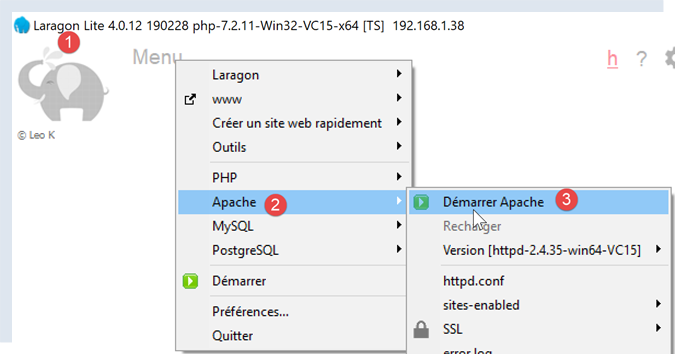
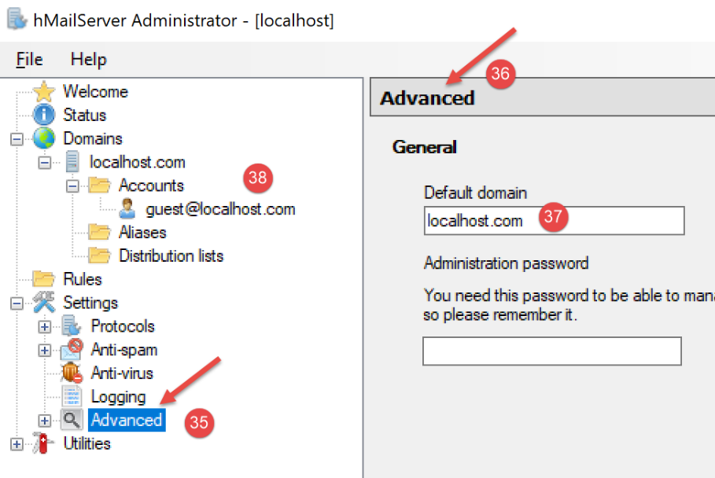
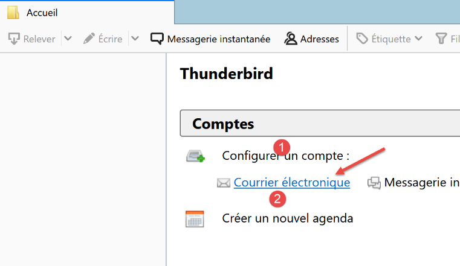
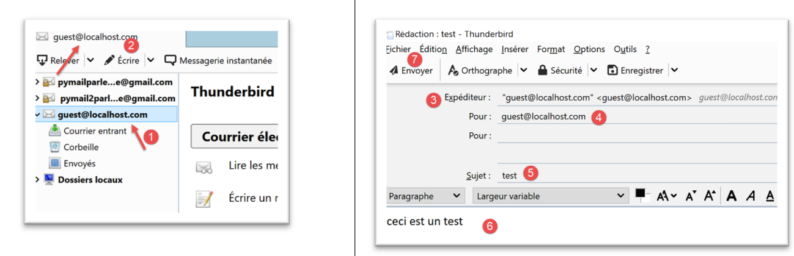
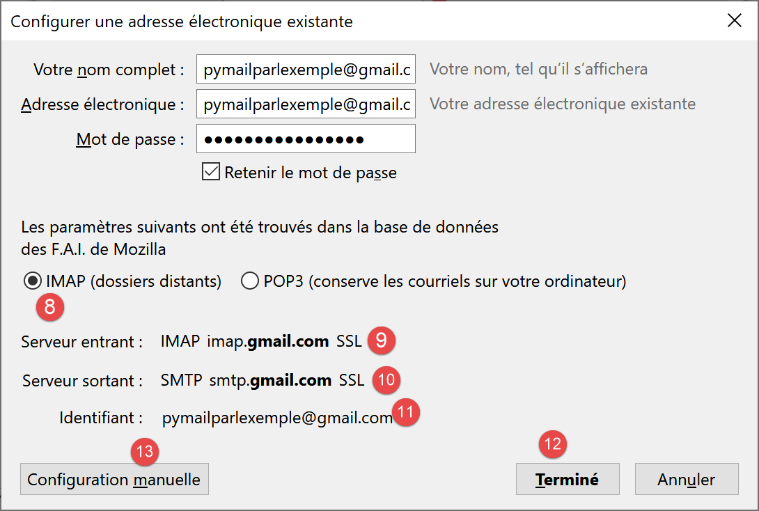
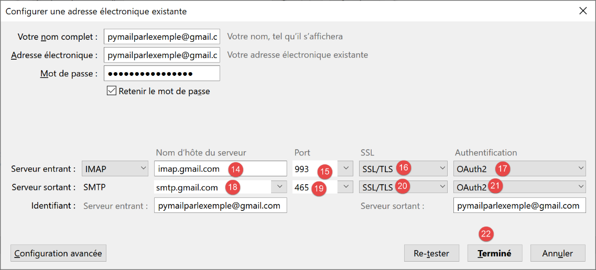
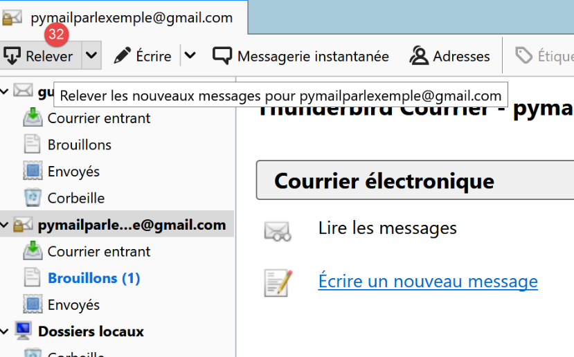
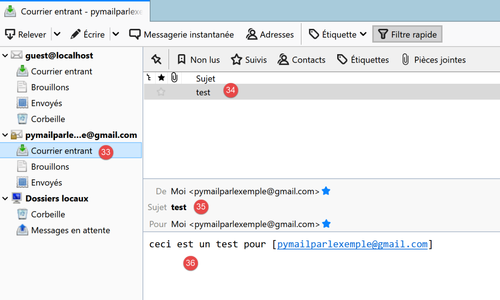
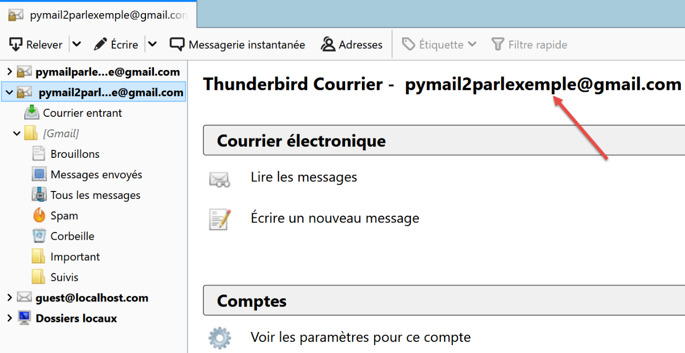

21. وظائف الإنترنت
سنناقش الآن وظائف الإنترنت في لغة Python، والتي تسمح لنا بتنفيذ برمجة TCP/IP (بروتوكول التحكم في الإرسال/بروتوكول الإنترنت).

21.1. أساسيات برمجة الإنترنت
21.1.1. نظرة عامة
لنفترض وجود اتصال بين جهازين بعيدين، A و B:

عندما يرغب تطبيق AppA الموجود على الجهاز A في التواصل مع تطبيق AppB الموجود على الجهاز B عبر الإنترنت، يجب أن يعرف عدة أمور:
- عنوان IP (بروتوكول الإنترنت) أو اسم الجهاز B؛
- رقم المنفذ الذي يستخدمه التطبيق AppB. في الواقع، قد يستضيف الجهاز B العديد من التطبيقات التي تعمل على الإنترنت. وعندما يتلقى معلومات من الشبكة، يجب أن يعرف التطبيق الذي تستهدفه هذه المعلومات. تصل التطبيقات الموجودة على الجهاز B إلى الشبكة من خلال واجهات تُعرف أيضًا باسم منافذ الاتصال. وترد هذه المعلومات في الحزمة التي يتلقاها الجهاز B حتى يمكن توصيلها إلى التطبيق الصحيح؛
- بروتوكولات الاتصال التي يفهمها الجهاز B. في دراستنا، سنستخدم بروتوكولات TCP-IP فقط؛
- بروتوكول الاتصال الذي يدعمه التطبيق AppB. في الواقع، ستتواصل الجهازان A و B مع بعضهما البعض. وسيتم تغليف ما يتبادلانه ضمن بروتوكولات TCP/IP. ومع ذلك، عندما يتلقى التطبيق AppB، في نهاية السلسلة، المعلومات المرسلة من التطبيق AppA، يجب أن يكون قادرًا على تفسيرها. وهذا مشابه للحالة التي يتواصل فيها شخصان، A و B، عبر الهاتف: حيث يتم نقل محادثتهما عبر الهاتف. يتم ترميز الكلام كإشارات بواسطة الهاتف A، ويتم إرساله عبر خطوط الهاتف، ويصل إلى الهاتف B ليتم فك ترميزه. ثم يسمع الشخص B الكلمات. وهنا يأتي دور مفهوم بروتوكول الاتصال : إذا كان A يتحدث الفرنسية و B لا يفهم تلك اللغة، فلن يتمكن A و B من التواصل بشكل فعال؛
لذلك، يجب أن يتفق التطبيقان المتواصلان على نوع الاتصال الذي سيستخدمانه. على سبيل المثال، الاتصال بخدمة FTP يختلف عن الاتصال بخدمة POP: هاتان الخدمتان لا تقبلان نفس الأوامر. فهما تستخدمان بروتوكول اتصال مختلف؛
21.1.2. خصائص بروتوكول TCP
هنا، سنقوم فقط بفحص اتصالات الشبكة باستخدام بروتوكول النقل TCP، الذي تتمثل خصائصه الرئيسية فيما يلي:
- تقوم العملية التي ترغب في إرسال البيانات أولاً بإنشاء اتصال مع العملية التي ستستقبل المعلومات التي توشك على إرسالها. يتم إنشاء هذا الاتصال بين منفذ على الجهاز المرسل ومنفذ على الجهاز المستقبل. وبذلك يتم إنشاء مسار افتراضي بين المنفذين، والذي سيتم حجزه حصريًا للعمليتين اللتين قامتا بإنشاء الاتصال؛
- تتبع جميع الحزم المرسلة من قبل العملية المصدر هذا المسار الافتراضي وتصل بالترتيب الذي تم إرسالها به؛
- تبدو المعلومات المرسلة متصلة. ترسل العملية المرسلة المعلومات وفقًا لسرعتها الخاصة. لا يتم إرسال هذه المعلومات بالضرورة على الفور: ينتظر بروتوكول TCP حتى يتوفر لديه ما يكفي لإرساله. يتم تخزينها في بنية تسمى مقطع TCP. بمجرد امتلاء هذا المقطع، يتم إرساله إلى طبقة IP، حيث يتم تغليفه في حزمة IP؛
- يتم ترقيم كل مقطع يرسله بروتوكول TCP. يتحقق بروتوكول TCP المستقبل من أنه يتلقى المقاطع بالتسلسل. لكل مقطع يتم استلامه بشكل صحيح، يرسل إقرارًا بالاستلام إلى المرسل؛
- عندما يتلقى المرسل هذا الإقرار، يقوم بإخطار عملية الإرسال. وبذلك يمكن لعملية الإرسال التأكد من وصول المقطع بأمان؛
- إذا لم يتلق بروتوكول TCP الذي أرسل المقطع إقرارًا بالاستلام بعد مرور فترة زمنية معينة، فإنه يعيد إرسال المقطع المعني، مما يضمن جودة خدمة توصيل المعلومات؛
- الدائرة الافتراضية التي يتم إنشاؤها بين عمليتي الاتصال هي دائرة ثنائية الاتجاه: وهذا يعني أن المعلومات يمكن أن تتدفق في كلا الاتجاهين. وبالتالي، يمكن لعملية الوجهة إرسال إقرارات حتى أثناء استمرار عملية المصدر في إرسال المعلومات. وهذا يسمح، على سبيل المثال، لبروتوكول TCP المصدر بإرسال شرائح متعددة دون انتظار إقرار. وإذا أدرك، بعد فترة زمنية معينة، أنه لم يتلق إقرارًا باستلام مقطع معين رقم n، فسيستأنف إرسال المقاطع من تلك النقطة؛
21.1.3. علاقة العميل-الخادم
غالبًا ما يكون الاتصال عبر الإنترنت غير متماثل: تبدأ الآلة A اتصالاً لطلب خدمة من الآلة B، محددةً أنها تريد إنشاء اتصال مع الخدمة SB1 على الآلة B. وتقبل الآلة B أو ترفض. إذا قبلت، يمكن للجهاز A إرسال طلباته إلى الخدمة SB1. يجب أن تتوافق هذه الطلبات مع بروتوكول الاتصال الذي تفهمه الخدمة SB1. وبذلك يتم إنشاء حوار طلب-استجابة بين الجهاز A، المعروف باسم جهاز العميل، والجهاز B، المعروف باسم جهاز الخادم. سيقوم أحد الشريكين بإغلاق الاتصال.
21.1.4. بنية العميل
ستكون بنية برنامج الشبكة الذي يطلب خدمات تطبيق الخادم كما يلي:
21.1.5. بنية الخادم
ستكون بنية البرنامج الذي يقدم الخدمات على النحو التالي:
يعالج برنامج الخادم طلب الاتصال الأولي للعميل بشكل مختلف عن طلباته اللاحقة للحصول على الخدمة. لا يقدم البرنامج الخدمة بنفسه. لو فعل ذلك، لما كان يستمع لطلبات الاتصال أثناء تقديم الخدمة، ولما تم تلبية احتياجات العملاء. يتصرف البرنامج بطريقة مختلفة: بمجرد استلام طلب اتصال على منفذ الاستماع وقبوله، يقوم الخادم بإنشاء مهمة مسؤولة عن تقديم الخدمة التي طلبها العميل. يتم تقديم هذه الخدمة على منفذ آخر بجهاز الخادم يُسمى منفذ الخدمة. وهذا يسمح بخدمة عدة عملاء في نفس الوقت.
ستكون مهمة الخدمة بالهيكل التالي:
21.2. تعرف على بروتوكولات الاتصال الخاصة بالإنترنت
21.2.1. مقدمة
عندما يتصل عميل بخادم، يتم إنشاء حوار بينهما. وتشكل طبيعة هذا الحوار ما يُعرف ببروتوكول اتصال الخادم. ومن بين بروتوكولات الإنترنت الأكثر شيوعًا ما يلي:
- HTTP: بروتوكول نقل النص التشعبي — وهو بروتوكول الاتصال بخادم الويب (خادم HTTP)؛
- SMTP: بروتوكول نقل البريد البسيط — وهو بروتوكول الاتصال بخادم إرسال البريد الإلكتروني (خادم SMTP)؛
- POP: بروتوكول مكتب البريد — وهو بروتوكول الاتصال بخادم تخزين البريد الإلكتروني (خادم POP). ويتضمن ذلك استرداد رسائل البريد الإلكتروني المستلمة، وليس إرسالها؛
- IMAP: بروتوكول الوصول إلى رسائل الإنترنت — البروتوكول المستخدم للتواصل مع خادم تخزين البريد الإلكتروني (خادم IMAP). وقد حل هذا البروتوكول تدريجيًا محل بروتوكول POP الأقدم؛
- FTP: بروتوكول نقل الملفات — البروتوكول المستخدم للتواصل مع خادم تخزين الملفات (خادم FTP)؛
جميع هذه البروتوكولات تعتمد على النص: حيث يتبادل العميل والخادم أسطر من النص. إذا كان لديك عميل قادر على:
- إنشاء اتصال بخادم TCP؛
- عرض أسطر النص المرسلة من الخادم على وحدة التحكم؛
- إرسال أسطر النص التي يكتبها المستخدم على لوحة المفاتيح إلى الخادم؛
وبذلك نتمكن من التواصل مع خادم TCP باستخدام بروتوكول نصي، شريطة أن نعرف قواعد ذلك البروتوكول.
21.2.2. أدوات TCP

في الكود المرتبط بهذا المستند، توجد أداتان للاتصال عبر TCP:
- [RawTcpClient] تسمح لك بالاتصال بالمنفذ P لخادم S؛
- [RawTcpServer] تسمح لك بإنشاء خادم يستمع إلى العملاء على المنفذ P؛
هذان برنامجان بلغة C# يتم توفير شفرة المصدر الخاصة بهما. وبالتالي يمكنك تعديلهما.
يتم استدعاء خادم TCP [RawTcpServer] باستخدام صيغة [RawTcpServer port] لإنشاء خدمة TCP على المنفذ [port] للجهاز المحلي (الكمبيوتر الذي تعمل عليه):
- يمكن للخادم خدمة عدة عملاء في وقت واحد؛
- يقوم الخادم بتنفيذ الأوامر التي يكتبها المستخدم على لوحة المفاتيح. وهذه الأوامر هي كما يلي:
- list: يسرد العملاء المتصلين حاليًا بالخادم. يتم عرضهم بالتنسيق [id=x-name=y]. يُستخدم حقل [id] لتعريف العملاء؛
- send x [text]: يرسل نصًا إلى العميل #x (id=x). لا يتم إرسال الأقواس المربعة []. وهي مطلوبة في الأمر. وتُستخدم لتمييز النص المرسل إلى العميل بصريًا؛
- close x: يغلق الاتصال مع العميل #x؛
- quit: يغلق جميع الاتصالات ويوقف الخدمة؛
- يتم عرض الأسطر المرسلة من العميل إلى الخادم على وحدة التحكم؛
- يتم تسجيل جميع التبادلات في ملف نصي باسم [machine-port.txt]، حيث
- [machine] هو اسم الجهاز الذي يعمل عليه الكود؛
- [port] هو منفذ الخدمة الذي يستجيب لطلبات العملاء؛
يتم استدعاء عميل TCP [RawTcpClient] باستخدام الصيغة [RawTcpClient server port] للاتصال بالمنفذ [port] على الخادم [server]:
- يتم إرسال الأسطر التي يكتبها المستخدم على لوحة المفاتيح إلى الخادم؛
- يتم عرض الأسطر المرسلة من الخادم على وحدة التحكم؛
- يتم تسجيل جميع الاتصالات في ملف نصي باسم [server-port.txt]؛
لنلقِ نظرة على مثال. افتح نافذتي محطة PyCharm وانتقل إلى مجلد utilities في كل منهما:

في إحدى النافذتين، قم بتشغيل خادم [RawTcpServer] على المنفذ 100:
(venv) C:\Data\st-2020\dev\python\cours-2020\python3-flask-2020\inet\utilitaires>RawTcpServer.exe 100
server : Serveur générique lancé sur le port 0.0.0.0:100
server : Attente d'un client...
server : Commandes disponibles : [list, send id [texte], close id, quit]
user :
- السطر 1: نحن في مجلد الأدوات المساعدة؛
- السطر 1: نبدأ تشغيل خادم TCP على المنفذ 100؛
- الأسطر 2-4: ينتظر الخادم عميل TCP ويعرض قائمة بالأوامر التي يمكن للمستخدم كتابتها على لوحة المفاتيح؛
- السطر 5: ينتظر الخادم أمرًا يدخله المستخدم عبر لوحة المفاتيح؛
في نافذة الأوامر الأخرى، نقوم بتشغيل عميل TCP:
(venv) C:\Data\st-2020\dev\python\cours-2020\python3-flask-2020\inet\utilitaires>RawTcpClient.exe localhost 100
Client [DESKTOP-30FF5FB:51173] connecté au serveur [localhost-100]
Tapez vos commandes (quit pour arrêter) :
- السطر 1: نحن في مجلد الأدوات المساعدة؛
- السطر 1: نقوم بتشغيل عميل TCP؛ ونطلب منه الاتصال بالمنفذ 100 على الجهاز المحلي (الذي يقوم بتشغيل كود [RawTcpClient])؛
- السطر 2، نجح العميل في الاتصال بالخادم. نحدد تفاصيل العميل: إنه موجود على الجهاز [DESKTOP-30FF5FB] (الجهاز المحلي في هذا المثال) ويستخدم المنفذ [51173] للتواصل مع الخادم:
- السطر 3: ينتظر العميل أمرًا يدخله المستخدم عبر لوحة المفاتيح؛
لنعد إلى نافذة الخادم. لقد تغير محتواها:
(venv) C:\Data\st-2020\dev\python\cours-2020\python3-flask-2020\inet\utilitaires>RawTcpServer.exe 100
server : Serveur générique lancé sur le port 0.0.0.0:100
server : Attente d'un client...
server : Commandes disponibles : [list, send id [texte], close id, quit]
user : server : Client 1-DESKTOP-30FF5FB-51173 connecté...
server : Attente d'un client...
- السطر 5: تم اكتشاف عميل. قام الخادم بتعيين الرقم التعريفي 1 له. قام الخادم بتحديد هوية العميل البعيد (الجهاز والمنفذ) بشكل صحيح؛
- السطر 6: يعود الخادم إلى انتظار عميل جديد؛
لنعد إلى نافذة العميل ونرسل أمرًا إلى الخادم:
(venv) C:\Data\st-2020\dev\python\cours-2020\python3-flask-2020\inet\utilitaires>RawTcpClient.exe localhost 100
Client [DESKTOP-30FF5FB:51173] connecté au serveur [localhost-100]
Tapez vos commandes (quit pour arrêter) :
hello from client
- السطر 4، الأمر المرسل إلى الخادم؛
لنعد إلى نافذة الخادم. لقد تغير محتواها:
(venv) C:\Data\st-2020\dev\python\cours-2020\python3-flask-2020\inet\utilitaires>RawTcpServer.exe 100
server : Serveur générique lancé sur le port 0.0.0.0:100
server : Attente d'un client...
server : Commandes disponibles : [list, send id [texte], close id, quit]
user : server : Client 1-DESKTOP-30FF5FB-51173 connecté...
server : Attente d'un client...
client 1 : [hello from client]
- السطر 7، بين قوسين معقوفين، الرسالة التي استقبلها الخادم؛
دعونا نرسل ردًا إلى العميل:
(venv) C:\Data\st-2020\dev\python\cours-2020\python3-flask-2020\inet\utilitaires>RawTcpServer.exe 100
server : Serveur générique lancé sur le port 0.0.0.0:100
server : Attente d'un client...
server : Commandes disponibles : [list, send id [texte], close id, quit]
user : server : Client 1-DESKTOP-30FF5FB-51173 connecté...
server : Attente d'un client...
client 1 : [hello from client]
send 1 [hello from server]
user :
- السطر 8، الرد المرسل إلى العميل 1. يتم إرسال النص الموجود بين الأقواس فقط، وليس الأقواس نفسها؛
لنعد إلى نافذة العميل:
(venv) C:\Data\st-2020\dev\python\cours-2020\python3-flask-2020\inet\utilitaires>RawTcpClient.exe localhost 100
Client [DESKTOP-30FF5FB:51173] connecté au serveur [localhost-100]
Tapez vos commandes (quit pour arrêter) :
hello from client
<-- [hello from server]
- السطر 5، الرد الذي تلقّاه العميل. النص الذي تم استلامه هو النص الموجود بين الأقواس المربعة؛
لنعد إلى نافذة الخادم لنرى الأوامر الأخرى:
(venv) C:\Data\st-2020\dev\python\cours-2020\python3-flask-2020\inet\utilitaires>RawTcpServer.exe 100
server : Serveur générique lancé sur le port 0.0.0.0:100
server : Attente d'un client...
server : Commandes disponibles : [list, send id [texte], close id, quit]
user : server : Client 1-DESKTOP-30FF5FB-51173 connecté...
server : Attente d'un client...
client 1 : [hello from client]
send 1 [hello from server]
user : list
server : id=1-name=DESKTOP-30FF5FB-51173
user : close 1
server : Connexion client 1 fermée...
user : quit
server : fin du service
- السطر 9، نطلب قائمة العملاء؛
- السطر 10، الرد؛
- السطر 11، نغلق الاتصال مع العميل رقم 1؛
- السطر 12، تأكيد الخادم؛
- السطر 13، نقوم بإيقاف تشغيل الخادم؛
- السطر 14، تأكيد الخادم؛
لنعد إلى نافذة العميل:
(venv) C:\Data\st-2020\dev\python\cours-2020\python3-flask-2020\inet\utilitaires>RawTcpClient.exe localhost 100
Client [DESKTOP-30FF5FB:51173] connecté au serveur [localhost-100]
Tapez vos commandes (quit pour arrêter) :
hello from client
<-- [hello from server]
Perte de la connexion avec le serveur...
- السطر 6، اكتشف العميل نهاية الخدمة؛
تم إنشاء ملفين للسجل، أحدهما للخادم والآخر للعميل:

- في [1]، سجلات الخادم: اسم الملف هو اسم العميل بالصيغة [machine-port]. وهذا يسمح بوجود ملفات سجل مختلفة لعملاء مختلفين؛
- في [2]، يسجل العميل: اسم الملف هو اسم الخادم بالصيغة [اسم_الجهاز-المنفذ]؛
سجلات الخادم هي كما يلي:
<-- [hello from client]
--> [hello from server]
سجلات العميل هي كما يلي:
--> [hello from client]
<-- [hello from server]
21.3. الحصول على اسم أو عنوان IP لجهاز على الإنترنت

يتم تحديد هوية أجهزة الكمبيوتر على الإنترنت بواسطة عنوان IP (IPv4 أو IPv6) وفي أغلب الأحيان بواسطة اسم. ومع ذلك، لا تستخدم بروتوكولات الاتصال عبر الإنترنت في النهاية سوى عنوان IP. لذلك، تحتاج إلى معرفة عنوان IP لجهاز كمبيوتر محدد باسمه.
فيما يلي النص البرمجي [ip-01.py]:
تعليقات
- السطر 2: توفر وحدة [socket] الوظائف اللازمة لإدارة مآخذ الإنترنت. يشير مصطلح [socket] إلى مقبس كهربائي أو منفذ شبكة؛
- السطر 6: تتيح لك وظيفة [get_ip_and_name] الحصول على ما يلي من اسم مضيف الجهاز:
- عنوان IP للجهاز؛
- اسم الجهاز المستمد من عنوان IP السابق؛
- السطر 10: تسترد وظيفة [socket.gethostbyname] عنوان IP للجهاز من أحد أسمائه (قد يكون للجهاز المتصل بالإنترنت اسم أساسي وأسماء مستعارة)؛
- السطر 12: تثير وظائف المقبس استثناء [socket.error] بمجرد حدوث خطأ؛
- السطر 19: تسترد الدالة [socket.gethostbyaddr] اسم الجهاز من عنوان IP الخاص به. سنرى أنه يمكننا الحصول على اسم مختلف عن الاسم الذي تم تمريره في السطر 6؛
- السطر 30: قائمة بأسماء الأجهزة. الاسم الأخير غير صحيح. يشير الاسم [localhost] إلى الجهاز الذي تعمل عليه والذي يقوم بتشغيل البرنامج النصي؛
- الأسطر 33–35: نعرض عناوين IP لهذه الأجهزة؛
النتائج:
C:\Data\st-2020\dev\python\cours-2020\python3-flask-2020\venv\Scripts\python.exe C:/Data/st-2020/dev/python/cours-2020/python3-flask-2020/inet/ip/ip_01.py
-------------------------------------
ip[istia.univ-angers.fr]=193.49.144.41
names[193.49.144.41]=('ametys-fo-2.univ-angers.fr', [], ['193.49.144.41'])
-------------------------------------
ip[www.univ-angers.fr]=193.49.144.41
names[193.49.144.41]=('ametys-fo-2.univ-angers.fr', [], ['193.49.144.41'])
-------------------------------------
ip[sergetahe.com]=87.98.154.146
names[87.98.154.146]=('cluster026.hosting.ovh.net', [], ['87.98.154.146'])
-------------------------------------
ip[localhost]=127.0.0.1
names[127.0.0.1]=('DESKTOP-30FF5FB', [], ['127.0.0.1'])
-------------------------------------
ip[xx]=[Errno 11001] getaddrinfo failed
Terminé...
Process finished with exit code 0
21.4. بروتوكول HTTP (بروتوكول نقل النص التشعبي)
21.4.1. المثال 1
عندما يعرض المتصفح عنوان URL، فإنه يعمل كعميل لخادم ويب، أو بعبارة أخرى، خادم HTTP. ويأخذ زمام المبادرة ويبدأ بإرسال عدد من الأوامر إلى الخادم. بالنسبة لهذا المثال الأول:
- سيكون الخادم هو الأداة المساعدة [RawTcpServer]؛
- سيكون العميل هو المتصفح؛
أولاً، نبدأ تشغيل الخادم على المنفذ 100:
(venv) C:\Data\st-2020\dev\python\cours-2020\python3-flask-2020\inet\utilitaires>RawTcpServer.exe 100
server : Serveur générique lancé sur le port 0.0.0.0:100
server : Attente d'un client...
server : Commandes disponibles : [list, send id [texte], close id, quit]
user :
ثم، باستخدام متصفح، نطلب عنوان URL [http://localhost:100]، مما يعني أننا نحدد أن خادم HTTP الذي يتم الاستعلام عنه يعمل على المنفذ 100 للجهاز المحلي:

لنعد إلى نافذة الخادم:
(venv) C:\Data\st-2020\dev\python\cours-2020\python3-flask-2020\inet\utilitaires>RawTcpServer.exe 100
server : Serveur générique lancé sur le port 0.0.0.0:100
server : Attente d'un client...
server : Commandes disponibles : [list, send id [texte], close id, quit]
user : server : Client 1-DESKTOP-30FF5FB-51438 connecté...
server : Attente d'un client...
server : Client 2-DESKTOP-30FF5FB-51439 connecté...
server : Attente d'un client...
client 1 : [GET / HTTP/1.1]
client 1 : [Host: localhost:100]
client 1 : [Connection: keep-alive]
client 1 : [DNT: 1]
client 1 : [Upgrade-Insecure-Requests: 1]
client 1 : [User-Agent: Mozilla/5.0 (Windows NT 10.0; Win64; x64) AppleWebKit/537.36 (KHTML, like Gecko) Chrome/83.0.4103.116 Safari/537.36]
client 1 : [Accept: text/html,application/xhtml+xml,application/xml;q=0.9,image/webp,image/apng,*/*;q=0.8,application/signed-exchange;v=b3;q=0.9]
client 1 : [Sec-Fetch-Site: none]
client 1 : [Sec-Fetch-Mode: navigate]
client 1 : [Sec-Fetch-User: ?1]
client 1 : [Sec-Fetch-Dest: document]
client 1 : [Accept-Encoding: gzip, deflate, br]
client 1 : [Accept-Language: fr-FR,fr;q=0.9,en-US;q=0.8,en;q=0.7]
client 1 : []
server : Client 3-DESKTOP-30FF5FB-51441 connecté...
server : Attente d'un client...
- السطر 5، العميل الذي اتصل؛
- الأسطر 9–22: سلسلة الأسطر النصية التي أرسلها:
- السطر 9: هذا السطر له التنسيق [GET URL HTTP/1.1]. يطلب عنوان URL / ويوجه الخادم لاستخدام بروتوكول HTTP 1.1؛
- السطر 10: هذا السطر له التنسيق [Host: server:port]. لا يهم حالة الأحرف في الأمر [Host]. لاحظ أن العميل يستعلم عن خادم محلي يعمل على المنفذ 100؛
- السطر 14: يحدد الأمر [User-Agent] هوية العميل؛
- السطر 15: يحدد الأمر [Accept] أنواع المستندات التي يقبلها العميل؛
- السطر 21: تحدد توجيهات [Accept-Language] اللغة التي يجب تقديم المستندات المطلوبة بها إذا كانت متوفرة بعدة لغات؛
- السطر 11: تحدد توجيهات [Connection] وضع الاتصال المطلوب: تشير [keep-alive] إلى أنه يجب الحفاظ على الاتصال حتى اكتمال التبادل؛
- السطر 22: ينهي العميل أوامره بسطر فارغ؛
نقوم بإنهاء الاتصال عن طريق إيقاف تشغيل الخادم:
client 1 : []
server : Client 3-DESKTOP-30FF5FB-51441 connecté...
server : Attente d'un client...
quit
server : fin du service
21.4.2. مثال 2
الآن بعد أن عرفنا الأوامر التي يرسلها المتصفح لطلب عنوان URL، سنطلب هذا العنوان باستخدام عميل TCP الخاص بنا [RawTcpClient]. سيكون خادم Apache في Laragon (القسم |تثبيت Laragon|) هو خادم الويب الخاص بنا.
دعونا نطلق Laragon ثم خادم الويب Apache:


الآن، باستخدام متصفح، دعونا نطلب عنوان URL [http://localhost:80]. هنا، نحدد الخادم [localhost:80] فقط دون عنوان URL للوثيقة. في هذه الحالة، يتم طلب عنوان URL /، أي جذر خادم الويب:

- في [1]، عنوان URL المطلوب. كتبنا في البداية [http://localhost:80] وقام المتصفح (Firefox هنا) ببساطة بتحويله إلى [localhost] لأن بروتوكول [http] يُفهم ضمناً عند عدم تحديد بروتوكول، والمنفذ [80] يُفهم ضمناً عند عدم تحديد المنفذ؛
- في [2]، الصفحة الجذرية / لخادم الويب الذي تم الاستعلام عنه؛
الآن، دعونا نلقي نظرة على النص الذي تلقّاه المتصفح:

- انقر بزر الماوس الأيمن على الصفحة المستلمة واختر الخيار [2]. ستحصل على شفرة المصدر التالية:
<!DOCTYPE html>
<html>
<head>
<title>Laragon</title>
<link href="https://fonts.googleapis.com/css?family=Karla:400" rel="stylesheet" type="text/css">
<style>
html, body {
height: 100%;
}
body {
margin: 0;
padding: 0;
width: 100%;
display: table;
font-weight: 100;
font-family: 'Karla';
}
.container {
text-align: center;
display: table-cell;
vertical-align: middle;
}
.content {
text-align: center;
display: inline-block;
}
.title {
font-size: 96px;
}
.opt {
margin-top: 30px;
}
.opt a {
text-decoration: none;
font-size: 150%;
}
a:hover {
color: red;
}
</style>
</head>
<body>
<div class="container">
<div class="content">
<div class="title" title="Laragon">Laragon</div>
<div class="info">
<br />
Apache/2.4.35 (Win64) OpenSSL/1.1.1b PHP/7.2.19<br />
PHP version: 7.2.19 <span><a title="phpinfo()" href="/?q=info">info</a></span><br />
Document Root: C:/MyPrograms/laragon/www<br />
</div>
<div class="opt">
<div><a title="Getting Started" href="https://laragon.org/docs">Getting Started</a></div>
</div>
</div>
</div>
</body>
</html>
الآن دعونا نطلب عنوان URL [http://localhost:80] باستخدام عميل TCP الخاص بنا:
(venv) C:\Data\st-2020\dev\python\cours-2020\python3-flask-2020\inet\utilitaires>RawTcpClient.exe localhost 80
Client [DESKTOP-30FF5FB:51541] connecté au serveur [localhost-80]
Tapez vos commandes (quit pour arrêter) :
- السطر 1: نتصل بالمنفذ 80 على خادم localhost. هذا هو المكان الذي يعمل فيه خادم الويب Laragon؛
الآن نكتب الأوامر التي اكتشفناها في الفقرة السابقة:
(venv) C:\Data\st-2020\dev\python\cours-2020\python3-flask-2020\inet\utilitaires>RawTcpClient.exe localhost 80
Client [DESKTOP-30FF5FB:51544] connecté au serveur [localhost-80]
Tapez vos commandes (quit pour arrêter) :
GET / HTTP/1.1
Host: localhost:80
<-- [HTTP/1.1 200 OK]
<-- [Date: Sun, 05 Jul 2020 12:42:14 GMT]
<-- [Server: Apache/2.4.35 (Win64) OpenSSL/1.1.1b PHP/7.2.19]
<-- [X-Powered-By: PHP/7.2.19]
<-- [Content-Length: 1776]
<-- [Content-Type: text/html; charset=UTF-8]
<-- []
<-- [<!DOCTYPE html>]
<-- [<html>]
<-- [ <head>]
<-- [ <title>Laragon</title>]
<-- []
<-- [ <link href="https://fonts.googleapis.com/css?family=Karla:400" rel="stylesheet" type="text/css">]
<-- []
<-- [ <style>]
<-- [ html, body {]
<-- [ height: 100%;]
<-- [ }]
<-- []
<-- [ body {]
<-- [ margin: 0;]
<-- [ padding: 0;]
<-- [ width: 100%;]
<-- [ display: table;]
<-- [ font-weight: 100;]
<-- [ font-family: 'Karla';]
<-- [ }]
<-- []
<-- [ .container {]
<-- [ text-align: center;]
<-- [ display: table-cell;]
<-- [ vertical-align: middle;]
<-- [ }]
<-- []
<-- [ .content {]
<-- [ text-align: center;]
<-- [ display: inline-block;]
<-- [ }]
<-- []
<-- [ .title {]
<-- [ font-size: 96px;]
<-- [ }]
<-- []
<-- [ .opt {]
<-- [ margin-top: 30px;]
<-- [ }]
<-- []
<-- [ .opt a {]
<-- [ text-decoration: none;]
<-- [ font-size: 150%;]
<-- [ }]
<-- [ ]
<-- [ a:hover {]
<-- [ color: red;]
<-- [ }]
<-- [ </style>]
<-- [ </head>]
<-- [ <body>]
<-- [ <div class="container">]
<-- [ <div class="content">]
<-- [ <div class="title" title="Laragon">Laragon</div>]
<-- [ ]
<-- [ <div class="info"><br />]
<-- [ Apache/2.4.35 (Win64) OpenSSL/1.1.1b PHP/7.2.19<br />]
<-- [ PHP version: 7.2.19 <span><a title="phpinfo()" href="/?q=info">info</a></span><br />]
<-- [ Document Root: C:/MyPrograms/laragon/www<br />]
<-- []
<-- [ </div>]
<-- [ <div class="opt">]
<-- [ <div><a title="Getting Started" href="https://laragon.org/docs">Getting Started</a></div>]
<-- [ </div>]
<-- [ </div>]
<-- []
<-- [ </div>]
<-- [ </body>]
<-- [</html>]
Perte de la connexion avec le serveur...
- السطر 4، الأمر [GET]. نطلب الدليل الجذر / لخادم الويب؛
- السطر 5، الأمر [Host]؛
- هذان هما الأمران الأساسيان الوحيدان. بالنسبة للأوامر الأخرى، سيستخدم خادم الويب القيم الافتراضية؛
- السطر 6، السطر الفارغ الذي يجب أن ينهي أوامر العميل؛
- يأتي رد خادم الويب أسفل السطر 6؛
- الأسطر 7-12: رؤوس HTTP لاستجابة الخادم؛
- السطر 13: السطر الفارغ الذي يشير إلى نهاية رؤوس HTTP؛
- الأسطر 14-82: مستند HTML المطلوب في السطر 4؛
نقوم بتحميل ملف السجل [localhost-80.txt]:

--> [GET / HTTP/1.1]
--> [Host: localhost:80]
--> []
<-- [HTTP/1.1 200 OK]
<-- [Date: Sun, 05 Jul 2020 12:42:14 GMT]
<-- [Server: Apache/2.4.35 (Win64) OpenSSL/1.1.1b PHP/7.2.19]
<-- [X-Powered-By: PHP/7.2.19]
<-- [Content-Length: 1776]
<-- [Content-Type: text/html; charset=UTF-8]
<-- []
<-- [<!DOCTYPE html>]
<-- [<html>]
<-- [ <head>]
<-- [ <title>Laragon</title>]
<-- []
<-- [ <link href="https://fonts.googleapis.com/css?family=Karla:400" rel="stylesheet" type="text/css">]
<-- []
<-- [ <style>]
<-- [ html, body {]
<-- [ height: 100%;]
<-- [ }]
<-- []
<-- [ body {]
<-- [ margin: 0;]
<-- [ padding: 0;]
<-- [ width: 100%;]
<-- [ display: table;]
<-- [ font-weight: 100;]
<-- [ font-family: 'Karla';]
<-- [ }]
<-- []
<-- [ .container {]
<-- [ text-align: center;]
<-- [ display: table-cell;]
<-- [ vertical-align: middle;]
<-- [ }]
<-- []
<-- [ .content {]
<-- [ text-align: center;]
<-- [ display: inline-block;]
<-- [ }]
<-- []
<-- [ .title {]
<-- [ font-size: 96px;]
<-- [ }]
<-- []
<-- [ .opt {]
<-- [ margin-top: 30px;]
<-- [ }]
<-- []
<-- [ .opt a {]
<-- [ text-decoration: none;]
<-- [ font-size: 150%;]
<-- [ }]
<-- [ ]
<-- [ a:hover {]
<-- [ color: red;]
<-- [ }]
<-- [ </style>]
<-- [ </head>]
<-- [ <body>]
<-- [ <div class="container">]
<-- [ <div class="content">]
<-- [ <div class="title" title="Laragon">Laragon</div>]
<-- [ ]
<-- [ <div class="info"><br />]
<-- [ Apache/2.4.35 (Win64) OpenSSL/1.1.1b PHP/7.2.19<br />]
<-- [ PHP version: 7.2.19 <span><a title="phpinfo()" href="/?q=info">info</a></span><br />]
<-- [ Document Root: C:/MyPrograms/laragon/www<br />]
<-- []
<-- [ </div>]
<-- [ <div class="opt">]
<-- [ <div><a title="Getting Started" href="https://laragon.org/docs">Getting Started</a></div>]
<-- [ </div>]
<-- [ </div>]
<-- []
<-- [ </div>]
<-- [ </body>]
<-- [</html>]
- الأسطر 11–79: مستند HTML المستلم. في المثال السابق، تلقى Firefox المستند نفسه؛
لدينا الآن الأساسيات اللازمة لبرمجة عميل TCP يطلب عنوان URL.
21.4.3. المثال 3

البرنامج النصي [http/01/main.py] هو عميل HTTP تم تكوينه بواسطة الملف [config.py]. ومحتوياته كالتالي:
- محتوى الملف عبارة عن قائمة بعناوين URL، حيث يمثل كل عنصر في القائمة قاموسًا. يحدد هذا القاموس كيفية الاتصال بالموقع المحدد بواسطة المفتاح [site]؛
- الأسطر 4–10: معنى المفاتيح في كل قاموس؛
النص البرمجي [http/01/main.py] هو كما يلي:
1 2 3 4 5 6 7 8 9 10 11 12 13 14 15 16 17 18 19 20 21 22 23 24 25 26 27 28 29 30 31 32 33 34 35 36 37 38 39 40 41 42 43 44 45 46 47 48 49 50 51 52 53 54 55 56 57 58 59 60 61 62 63 64 65 66 67 68 69 70 71 72 73 74 75 76 77 78 79 80 81 82 83 84 85 86 87 88 89 90 91 92 93 94 95 96 97 98 99 100 101 102 103 104 105 106 107 108 109 110 111 112 113 114 115 116 117 118 119 120 121 122 123 124 | |
تعليقات على الكود:
- السطور 108-109: يتم استرداد قاموس [config] من الوحدة النمطية [config.py]؛
- السطور 111-122: يتم استخدام هذا القاموس؛
- السطران 118 و7: تطلب الدالة [get_url(url)] مستندًا من موقع الويب url[site] وتخزنه في الملف النصي url[site].HTML. بشكل افتراضي، يتم تسجيل تبادلات العميل/الخادم في وحدة التحكم (tracking=True)؛
- يتم تنفيذ كل شيء داخل كتلة [try / finally] (الأسطر 14–96). لا توجد جملة [except]. يتم ترحيل الاستثناءات إلى الكود المستدعي، الذي يلتقطها ويعرضها (الأسطر 119–120)؛
- السطور 16–17: فتح اتصال بخادم الويب. تأخذ الدالة [socket.create_connection] ثلاثة معلمات:
- [param1]: هو اسم جهاز الإنترنت الذي تريد الوصول إليه؛
- [param2]: هو رقم منفذ الخدمة التي تريد الاتصال بها؛
- [param3]: تُرجع [socket.create_connection] مأخذ توصيل، ويحدد [param3]، إن وجد، مهلة انتظار مأخذ التوصيل الذي تم إنشاؤه. مهلة الانتظار هي أقصى فترة انتظار لمأخذ التوصيل أثناء انتظاره لاستجابة من الجهاز البعيد؛
- السطران 27-28: إنشاء ملف [site.html] الذي سيتم تخزين مستند HTML المستلم فيه؛
- السطور 34-43: يجب أن يكون الأمر الأول للعميل هو الأمر [GET URL HTTP/1.1]؛
- السطر 43: تتيح الدالة [sock.send] للعميل إرسال البيانات إلى الخادم. وهنا، تحمل السلسلة النصية المرسلة المعنى التالي: "أريد (GET) الصفحة [URL] من الموقع الإلكتروني الذي أنا متصل به. وأنا أستخدم بروتوكول HTTP الإصدار 1.1"؛
- السطر 43: ترسل العبارة [sock.send(bytearray(command, 'utf-8'))] مصفوفة بايت. يتم الحصول على هذه المصفوفة عن طريق تحويل السلسلة [command] إلى تسلسل من البايتات المشفرة بـ UTF-8؛
- الأسطر 44-52: يتم إرسال أسطر بروتوكول HTTP الأخرى [Host، User-Agent، Accept، Accept-Language...]. لا يهم ترتيبها؛
- الأسطر 53–55: يتم إرسال رأس HTTP [Connection: close] لإرشاد الخادم بإغلاق الاتصال بمجرد إرساله للوثيقة المطلوبة. بشكل افتراضي، لا يقوم الخادم بذلك. لذلك، يجب طلب ذلك صراحةً. وتتمثل الفائدة في أن هذا الإغلاق سيتم اكتشافه من جانب العميل، وبهذه الطريقة سيعرف العميل أنه قد تلقى الوثيقة المطلوبة بالكامل؛
- السطور 56-57: يتم إرسال سطر فارغ إلى الخادم للإشارة إلى أن العميل قد انتهى من إرسال رؤوس HTTP الخاصة به وهو الآن في انتظار المستند المطلوب؛
- الأسطر 68–86: سيرسل الخادم أولاً سلسلة من رؤوس HTTP التي توفر تفاصيل متنوعة حول المستند المطلوب. تنتهي هذه الرؤوس بسطر فارغ؛
- الأسطر 69–73: لقراءة استجابة الخادم سطراً سطراً، نستخدم طريقة [sock.makefile(encoding=encoding)]. تحدد المعلمة الاختيارية [encoding] ترميز النص المتوقع. بعد هذه العملية، يمكن قراءة دفق الأسطر المرسلة من الخادم كملف نصي قياسي؛
- السطر 78: نقرأ سطراً أرسله الخادم باستخدام طريقة [readline]. نزيل منه المسافات البيضاء في البداية والنهاية (المسافات، أحرف الأسطر الجديدة)؛
- الأسطر 81-83: إذا لم يكن السطر فارغًا وتم طلب التتبع، يتم عرض السطر المستلم على وحدة التحكم؛
- الأسطر 84-86: إذا تم استرداد السطر الفارغ الذي يشير إلى نهاية رؤوس HTTP المرسلة من الخادم، يتم إنهاء الحلقة في السطر 76؛
- الأسطر 90-95: يمكن قراءة أسطر نص استجابة الخادم سطراً سطراً باستخدام حلقة while وحفظها في ملف نصي [html]. عندما يرسل خادم الويب الصفحة المطلوبة بالكامل، فإنه يغلق اتصاله مع العميل. على جانب العميل، سيتم اكتشاف ذلك على أنه نهاية الملف، وسنخرج من الحلقة في الأسطر 90–95؛
- الأسطر 96-102: سواء حدث خطأ أم لا، يتم تحرير جميع الموارد المستخدمة بواسطة الكود؛
النتائج:
تعرض وحدة التحكم السجلات التالية:
C:\Data\st-2020\dev\python\cours-2020\python3-flask-2020\venv\Scripts\python.exe C:/Data/st-2020/dev/python/cours-2020/python3-flask-2020/inet/http/01/main.py
-------------------------
localhost
-------------------------
Client : début de la communication avec le serveur [localhost]
--> GET / HTTP/1.1
--> Host: localhost:80
--> User-Agent: client Python
--> Accept: text/HTML
--> Accept-Language: fr
Réponse du serveur [localhost]
<-- HTTP/1.1 200 OK
<-- Date: Sun, 05 Jul 2020 16:27:46 GMT
<-- Server: Apache/2.4.35 (Win64) OpenSSL/1.1.1b PHP/7.2.19
<-- X-Powered-By: PHP/7.2.19
<-- Content-Length: 1776
<-- Connection: close
<-- Content-Type: text/html; charset=UTF-8
-------------------------
sergetahe.com
-------------------------
Client : début de la communication avec le serveur [sergetahe.com]
--> GET / HTTP/1.1
--> Host: sergetahe.com:80
--> User-Agent: client Python
--> Accept: text/HTML
--> Accept-Language: fr
Réponse du serveur [sergetahe.com]
<-- HTTP/1.1 302 Found
<-- Date: Sun, 05 Jul 2020 16:27:45 GMT
<-- Content-Type: text/html; charset=UTF-8
<-- Transfer-Encoding: chunked
<-- Connection: close
<-- Server: Apache
<-- X-Powered-By: PHP/7.3
<-- Location: http://sergetahe.com:80/cours-tutoriels-de-programmation
<-- Set-Cookie: SERVERID68971=2620178|XwH/h|XwH/h; path=/
<-- X-IPLB-Instance: 17106
-------------------------
tahe.developpez.com
-------------------------
Client : début de la communication avec le serveur [tahe.developpez.com]
--> GET / HTTP/1.1
--> Host: tahe.developpez.com:443
--> User-Agent: client Python
--> Accept: text/HTML
--> Accept-Language: fr
Réponse du serveur [tahe.developpez.com]
<-- HTTP/1.1 400 Bad Request
<-- Date: Sun, 05 Jul 2020 16:27:45 GMT
<-- Server: Apache/2.4.38 (Debian)
<-- Content-Length: 453
<-- Connection: close
<-- Content-Type: text/html; charset=iso-8859-1
-------------------------
www.sergetahe.com
-------------------------
Client : début de la communication avec le serveur [www.sergetahe.com]
--> GET /cours-tutoriels-de-programmation/ HTTP/1.1
--> Host: sergetahe.com:80
--> User-Agent: client Python
--> Accept: text/HTML
--> Accept-Language: fr
Réponse du serveur [www.sergetahe.com]
<-- HTTP/1.1 301 Moved Permanently
<-- Date: Sun, 05 Jul 2020 16:27:45 GMT
<-- Content-Type: text/html; charset=iso-8859-1
<-- Content-Length: 263
<-- Connection: close
<-- Server: Apache
<-- Location: https://sergetahe.com/cours-tutoriels-de-programmation/
<-- Set-Cookie: SERVERID68971=2620178|XwH/h|XwH/h; path=/
<-- X-IPLB-Instance: 17095
Terminé...
Process finished with exit code 0
تعليقات
- السطر 12: تم العثور على عنوان URL [http://localhost/] (الرمز 200)؛
- السطر 29: لم يتم العثور على عنوان URL [http://sergetahe.com/] (الرمز 302). الرمز 302 يعني أن الصفحة المطلوبة قد غيرت عنوان URL الخاص بها. يشار إلى عنوان URL الجديد بواسطة رأس HTTP [Location] في السطر 36؛
- السطر 49: الطلب المرسل إلى الخادم [http://tahe.developpez.com] غير صالح (رمز الحالة 400)؛
- السطر 65: لم يتم العثور على عنوان URL [http://www.sergetahe.com/] (الرمز 301). الرمز 301 يعني أن الصفحة المطلوبة قد غيرت عنوان URL الخاص بها بشكل دائم. يتم الإشارة إلى عنوان URL الجديد بواسطة رأس HTTP [Location] في السطر 71؛
بشكل عام، الرموز 3xx و 4xx و 5xx من خادم HTTP هي رموز خطأ.
أنتج التنفيذ الملفات التالية:

الملف المستلم [output/localhost.HTML] هو كما يلي:
<!DOCTYPE html>
<html>
<head>
<title>Laragon</title>
<link href="https://fonts.googleapis.com/css?family=Karla:400" rel="stylesheet" type="text/css">
<style>
html, body {
height: 100%;
}
body {
margin: 0;
padding: 0;
width: 100%;
display: table;
font-weight: 100;
font-family: 'Karla';
}
.container {
text-align: center;
display: table-cell;
vertical-align: middle;
}
.content {
text-align: center;
display: inline-block;
}
.title {
font-size: 96px;
}
.opt {
margin-top: 30px;
}
.opt a {
text-decoration: none;
font-size: 150%;
}
a:hover {
color: red;
}
</style>
</head>
<body>
<div class="container">
<div class="content">
<div class="title" title="Laragon">Laragon</div>
<div class="info"><br />
Apache/2.4.35 (Win64) OpenSSL/1.1.1b PHP/7.2.19<br />
PHP version: 7.2.19 <span><a title="phpinfo()" href="/?q=info">info</a></span><br />
Document Root: C:/MyPrograms/laragon/www<br />
</div>
<div class="opt">
<div><a title="Getting Started" href="https://laragon.org/docs">Getting Started</a></div>
</div>
</div>
</div>
</body>
</html>
لقد حصلنا بالفعل على نفس المستند الذي حصلنا عليه مع متصفح Firefox.
المستند الذي تم استلامه [output/sergetahe_com.html] هو كما يلي:

تقوم معظم خوادم HTTP بإرسال استجاباتها للطلبات على شكل أجزاء. ويسبق كل جزء يتم إرساله سطر يشير إلى عدد البايتات في الجزء التالي. وهذا يسمح للعميل بقراءة ذلك العدد المحدد من البايتات لاستلام الجزء. هنا، يشير الرقم 0 إلى أن الجزء التالي يحتوي على صفر بايت. تذكر أن الخادم قد أشار إلى أن المستند [http://sergetahe.com/] قد تغير عنوان URL الخاص به. ولذلك، لم يرسل أي مستند.
فيما يلي نص الوثيقة [output/tahe_developpez_com.html]:
<!DOCTYPE HTML PUBLIC "-//IETF//DTD HTML 2.0//EN">
<html><head>
<title>400 Bad Request</title>
</head><body>
<h1>Bad Request</h1>
<p>Your browser sent a request that this server could not understand.<br />
Reason: You're speaking plain HTTP to an SSL-enabled server port.<br />
Instead use the HTTPS scheme to access this URL, please.<br />
</p>
<hr>
<address>Apache/2.4.38 (Debian) Server at 2eurocents.developpez.com Port 80</address>
</body></html>
- الأسطر 1–12: أرسل الخادم مستند HTML على الرغم من أن الطلب كان غير صحيح (السطر 49 من النتائج). يسمح مستند HTML للخادم بتحديد سبب الخطأ. ويشار إلى ذلك في السطرين 6 و7:
- السطر 7: استخدم عميلنا بروتوكول HTTP؛
- السطر 8: يستخدم الخادم بروتوكول HTTPS (S=آمن) ولا يقبل بروتوكول HTTP؛
المستند [output/www_sergetahe_com.html] هو كما يلي:
<!DOCTYPE HTML PUBLIC "-//IETF//DTD HTML 2.0//EN">
<html><head>
<title>301 Moved Permanently</title>
</head><body>
<h1>Moved Permanently</h1>
<p>The document has moved <a href="https://sergetahe.com/cours-tutoriels-de-programmation/">here</a>.</p>
</body></html>
هنا أيضًا، حدث خطأ (السطر 3). ومع ذلك، يحرص الخادم على إرسال مستند HTML يوضح تفاصيل الخطأ (الأسطر 1–7).
21.4.4. المثال 4
أظهرت لنا الأمثلة السابقة أن عميل HTTP الخاص بنا كان غير كافٍ. سنقدم الآن أداة تسمى [curl] تسمح لنا باسترداد مستندات الويب مع التعامل مع التحديات المذكورة: بروتوكول HTTPS، والمستندات المرسلة على شكل أجزاء، وعمليات إعادة التوجيه... تم تثبيت أداة [curl] مع Laragon:

لنفتح محطة PyCharm [1]:

- في [1]، الوصول إلى محطات PyCharm؛
- في [2-3]، المحطات النشطة بالفعل؛
- في [4]، الدليل الذي تتواجد فيه حاليًا. لا يهم أي منها تستخدم؛
في المحطة الطرفية، اكتب الأمر التالي:
(venv) C:\Data\st-2020\dev\python\cours-2020\python3-flask-2020\inet\utilitaires>curl --help
Usage: curl [options...] <url>
--abstract-unix-socket <path> Connect via abstract Unix domain socket
--anyauth Pick any authentication method
-a, --append Append to target file when uploading
--basic Use HTTP Basic Authentication
--cacert <CA certificate> CA certificate to verify peer against
…
إن ظهور نتائج للأمر [curl –help] يدل على أن الأمر [curl] موجود في مسار PATH الخاص بالمحطة الطرفية. في نظام Windows، يمثل مسار PATH مجموعة المجلدات التي يتم البحث فيها عندما يكتب المستخدم أمرًا قابلاً للتنفيذ، وهو في هذه الحالة [curl]. يمكن تحديد قيمة مسار PATH على النحو التالي:
(venv) C:\Data\st-2020\dev\python\cours-2020\python3-flask-2020\inet\utilitaires>echo %PATH%
C:\Data\st-2020\dev\python\cours-2020\python3-flask-2020\venv\Scripts;C:\Program Files (x86)\Common Files\Oracle\Java\javapath;C:\Program Files\Python38\Scripts\;C:\Program Files\Python38\;C:\windows\system32;C:\windows;C:\windows\System32\Wbem;C:\windows\System32\WindowsPowerShell\v1.0\;C:\windows\System32\OpenSSH\;C:\Program Files\Git\cmd;C:\Users\serge\AppData\Local\Microsoft\WindowsApps;;C:\Program Files\JetBrains\PyCharm Community Edition 2020.1.2\bin;
السطر 2: مجلدات PATH مفصولة بفواصل منقوطة. لا يظهر أي مجلد متعلق بـ Laragon في هذه القائمة. بعد إجراء مزيد من التحقيق، وجدنا أن هناك ملف [curl] في المجلد [c:\windows\system32]. هذا هو الملف الذي استجاب سابقًا.
إذا كنت ترغب في استخدام أداة [curl] المضمنة في Laragon، فيمكنك المتابعة على النحو التالي:


- في [2]، محطة Laragon؛
- في [3]، يتيح لك هذا الزر إنشاء محطات طرفية جديدة، تفتح كل منها في علامة تبويب في النافذة أعلاه؛
- في [4]، نقوم بتعيين مسار PATH لمحطة Laragon؛
- ستحصل على شيء مختلف تمامًا عما تم الحصول عليه في محطة PyCharm. يحتوي مسار PATH هذا على العديد من المجلدات التي تم إنشاؤها أثناء تثبيت Laragon. المجلد الذي يحتوي على أداة [curl] هو أحدها:

بعد ذلك، استخدم محطة العمل التي تفضلها. فقط ضع في اعتبارك أنه عندما ترغب في استخدام أداة مقدمة من Laragon، فإن محطة عمل Laragon هي الخيار المفضل.
يعرض الأمر [curl --help] جميع خيارات تكوين [curl]. وهناك العشرات منها. سنستخدم القليل منها فقط. لطلب عنوان URL، اكتب ببساطة الأمر [curl URL]. سيعرض هذا الأمر المستند المطلوب على وحدة التحكم. إذا كنت تريد أيضًا رؤية تبادلات HTTP بين العميل والخادم، اكتب [curl --verbose URL]. وأخيرًا، لحفظ مستند HTML المطلوب في ملف، اكتب [curl --verbose --output filename URL].
لتجنب ازدحام نظام الملفات في جهازنا، دعونا ننتقل إلى موقع مختلف (أنا أستخدم محطة Laragon هنا):
λ cd \Temp\
C:\Temp
λ mkdir curl
C:\Temp
λ cd curl\
C:\Temp\curl
λ dir
Le volume dans le lecteur C s’appelle Local Disk
Le numéro de série du volume est B84C-D958
Répertoire de C:\Temp\curl
05/07/2020 19:31 <DIR> .
05/07/2020 19:31 <DIR> ..
0 fichier(s) 0 octets
2 Rép(s) 892 388 098 048 octets libres
- السطر 3، ننتقل إلى المجلد [c:\temp]. إذا لم يكن هذا المجلد موجودًا، يمكنك إنشاؤه أو اختيار مجلد آخر؛
- السطر 6، قم بإنشاء مجلد باسم [curl]؛
- السطر 9، ننتقل إليه؛
- السطر 12، نعرض محتوياته. إنه فارغ (السطر 20)؛
تأكد من تشغيل خادم Laragon Apache، واستخدم [curl] لطلب عنوان URL [http://localhost/] باستخدام الأمر [curl –verbose –output localhost.html http://localhost/]. ستحصل على النتائج التالية:
λ curl --verbose --output localhost.html http://localhost/
% Total % Received % Xferd Average Speed Time Time Time Current
Dload Upload Total Spent Left Speed
0 0 0 0 0 0 0 0 --:--:-- --:--:-- --:--:-- 0* Trying ::1...
* TCP_NODELAY set
* Trying 127.0.0.1...
* TCP_NODELAY set
0 0 0 0 0 0 0 0 --:--:-- 0:00:01 --:--:-- 0* Connected to localhost (::1) port 80 (#0)
0 0 0 0 0 0 0 0 --:--:-- 0:00:01 --:--:-- 0> GET / HTTP/1.1
> Host: localhost
> User-Agent: curl/7.63.0
> Accept: */*
>
< HTTP/1.1 200 OK
< Date: Sun, 05 Jul 2020 17:35:43 GMT
< Server: Apache/2.4.35 (Win64) OpenSSL/1.1.1b PHP/7.2.19
< X-Powered-By: PHP/7.2.19
< Content-Length: 1776
< Content-Type: text/html; charset=UTF-8
<
{ [1776 bytes data]
100 1776 100 1776 0 0 1062 0 0:00:01 0:00:01 --:--:-- 1062
* Connection #0 to host localhost left intact
- الأسطر 10–13: الأسطر التي أرسلها [curl] إلى خادم [localhost]. تم التعرف على بروتوكول HTTP؛
- الأسطر 14–20: الأسطر المرسلة ردًا على ذلك من قبل الخادم؛
- السطر 14: يشير إلى أن المستند المطلوب قد تم استلامه بنجاح؛
يحتوي الملف [localhost.html] على المستند المطلوب. يمكنك التحقق من ذلك عن طريق فتح الملف في محرر نصوص.
الآن دعونا نطلب عنوان URL [https://tahe.developpez.com:443/]. للوصول إلى هذا العنوان، يجب أن يدعم عميل HTTP بروتوكول HTTPS. وهذا هو الحال مع عميل [curl].
إخراج وحدة التحكم كما يلي:
C:\Temp\curl
λ curl --verbose --output tahe.developpez.com.html https://tahe.developpez.com:443/
% Total % Received % Xferd Average Speed Time Time Time Current
Dload Upload Total Spent Left Speed
0 0 0 0 0 0 0 0 --:--:-- --:--:-- --:--:-- 0* Trying 87.98.130.52...
* TCP_NODELAY set
0 0 0 0 0 0 0 0 --:--:-- --:--:-- --:--:-- 0* Connected to tahe.developpez.com (87.98.130.52) port 443 (#0)
* ALPN, offering h2
* ALPN, offering http/1.1
* successfully set certificate verify locations:
* CAfile: C:\MyPrograms\laragon\bin\laragon\utils\curl-ca-bundle.crt
CApath: none
} [5 bytes data]
* TLSv1.3 (OUT), TLS handshake, Client hello (1):
} [512 bytes data]
* TLSv1.3 (IN), TLS handshake, Server hello (2):
{ [122 bytes data]
* TLSv1.3 (IN), TLS handshake, Encrypted Extensions (8):
{ [25 bytes data]
* TLSv1.3 (IN), TLS handshake, Certificate (11):
{ [2563 bytes data]
* TLSv1.3 (IN), TLS handshake, CERT verify (15):
{ [264 bytes data]
* TLSv1.3 (IN), TLS handshake, Finished (20):
{ [52 bytes data]
* TLSv1.3 (OUT), TLS change cipher, Change cipher spec (1):
} [1 bytes data]
* TLSv1.3 (OUT), TLS handshake, Finished (20):
} [52 bytes data]
* SSL connection using TLSv1.3 / TLS_AES_256_GCM_SHA384
* ALPN, server accepted to use http/1.1
* Server certificate:
* subject: CN=*.developpez.com
* start date: Jul 1 15:38:30 2020 GMT
* expire date: Sep 29 15:38:30 2020 GMT
* subjectAltName: host "tahe.developpez.com" matched cert's "*.developpez.com"
* issuer: C=US; O=Let's Encrypt; CN=Let's Encrypt Authority X3
* SSL certificate verify ok.
} [5 bytes data]
> GET / HTTP/1.1
> Host: tahe.developpez.com
> User-Agent: curl/7.63.0
> Accept: */*
>
{ [5 bytes data]
* TLSv1.3 (IN), TLS handshake, Newsession Ticket (4):
{ [281 bytes data]
* TLSv1.3 (IN), TLS handshake, Newsession Ticket (4):
{ [297 bytes data]
* old SSL session ID is stale, removing
{ [5 bytes data]
< HTTP/1.1 200 OK
< Date: Sun, 05 Jul 2020 17:39:53 GMT
< Server: Apache/2.4.38 (Debian)
< X-Powered-By: PHP/5.3.29
< Vary: Accept-Encoding
< Transfer-Encoding: chunked
< Content-Type: text/html
<
{ [6 bytes data]
100 99k 0 99k 0 0 79343 0 --:--:-- 0:00:01 --:--:-- 79343
* Connection #0 to host tahe.developpez.com left intact
- الأسطر 10-39: تبادل بين العميل والخادم لتأمين الاتصال: سيتم تشفير هذا؛
- الأسطر 41-44: رؤوس HTTP المرسلة من العميل [curl] إلى الخادم؛
- السطر 52: تم العثور على المستند المطلوب؛
- السطر 57: يتم إرسال المستند على شكل أجزاء؛
يتعامل [curl] بشكل صحيح مع بروتوكول HTTPS الآمن ومع حقيقة أن المستند يُرسل على شكل أجزاء. يمكن العثور على المستند المرسل هنا في الملف [tahe.developpez.com.html].
الآن دعونا نطلب عنوان URL [http://sergetahe.com/cours-tutoriels-de-programmation]. لاحظنا أنه بالنسبة لهذا العنوان، كان هناك إعادة توجيه إلى عنوان URL [http://sergetahe.com/cours-tutoriels-de-programmation/] (مع وجود / في النهاية).
إخراج وحدة التحكم كما يلي:
C:\Temp\curl
λ curl --verbose --output sergetahe.com.html --location http://sergetahe.com/cours-tutoriels-de-programmation
% Total % Received % Xferd Average Speed Time Time Time Current
Dload Upload Total Spent Left Speed
0 0 0 0 0 0 0 0 --:--:-- --:--:-- --:--:-- 0* Trying 87.98.154.146...
* TCP_NODELAY set
* Connected to sergetahe.com (87.98.154.146) port 80 (#0)
> GET /cours-tutoriels-de-programmation HTTP/1.1
> Host: sergetahe.com
> User-Agent: curl/7.63.0
> Accept: */*
>
< HTTP/1.1 301 Moved Permanently
< Date: Sun, 05 Jul 2020 17:44:17 GMT
< Content-Type: text/html; charset=iso-8859-1
< Content-Length: 262
< Server: Apache
< Location: http://sergetahe.com/cours-tutoriels-de-programmation/
< Set-Cookie: SERVERID68971=2620178|XwIRd|XwIRd; path=/
< X-IPLB-Instance: 17095
<
* Ignoring the response-body
{ [262 bytes data]
100 262 100 262 0 0 1858 0 --:--:-- --:--:-- --:--:-- 1858
* Connection #0 to host sergetahe.com left intact
* Issue another request to this URL: 'http://sergetahe.com/cours-tutoriels-de-programmation/'
* Found bundle for host sergetahe.com: 0x14385f8 [can pipeline]
* Could pipeline, but not asked to!
* Re-using existing connection! (#0) with host sergetahe.com
* Connected to sergetahe.com (87.98.154.146) port 80 (#0)
> GET /cours-tutoriels-de-programmation/ HTTP/1.1
> Host: sergetahe.com
> User-Agent: curl/7.63.0
> Accept: */*
>
< HTTP/1.1 301 Moved Permanently
< Date: Sun, 05 Jul 2020 17:44:17 GMT
< Content-Type: text/html; charset=iso-8859-1
< Content-Length: 263
< Server: Apache
< Location: https://sergetahe.com/cours-tutoriels-de-programmation/
< Set-Cookie: SERVERID68971=2620178|XwIRd|XwIRd; path=/
< X-IPLB-Instance: 17095
<
* Ignoring the response-body
{ [263 bytes data]
100 263 100 263 0 0 764 0 --:--:-- --:--:-- --:--:-- 764
* Connection #0 to host sergetahe.com left intact
* Issue another request to this URL: 'https://sergetahe.com/cours-tutoriels-de-programmation/'
* Trying 87.98.154.146...
* TCP_NODELAY set
* Connected to sergetahe.com (87.98.154.146) port 443 (#1)
* ALPN, offering h2
* ALPN, offering http/1.1
* successfully set certificate verify locations:
* CAfile: C:\MyPrograms\laragon\bin\laragon\utils\curl-ca-bundle.crt
CApath: none
} [5 bytes data]
* TLSv1.3 (OUT), TLS handshake, Client hello (1):
} [512 bytes data]
* TLSv1.3 (IN), TLS handshake, Server hello (2):
{ [102 bytes data]
* TLSv1.2 (IN), TLS handshake, Certificate (11):
{ [2572 bytes data]
* TLSv1.2 (IN), TLS handshake, Server key exchange (12):
{ [333 bytes data]
* TLSv1.2 (IN), TLS handshake, Server finished (14):
{ [4 bytes data]
* TLSv1.2 (OUT), TLS handshake, Client key exchange (16):
} [70 bytes data]
* TLSv1.2 (OUT), TLS change cipher, Change cipher spec (1):
} [1 bytes data]
* TLSv1.2 (OUT), TLS handshake, Finished (20):
} [16 bytes data]
0 0 0 0 0 0 0 0 --:--:-- --:--:-- --:--:-- 0* TLSv1.2 (IN), TLS handshake, Finished (20):
{ [16 bytes data]
* SSL connection using TLSv1.2 / ECDHE-RSA-AES128-GCM-SHA256
* ALPN, server accepted to use h2
* Server certificate:
* subject: CN=sergetahe.com
* start date: May 10 01:41:15 2020 GMT
* expire date: Aug 8 01:41:15 2020 GMT
* subjectAltName: host "sergetahe.com" matched cert's "sergetahe.com"
* issuer: C=US; O=Let's Encrypt; CN=Let's Encrypt Authority X3
* SSL certificate verify ok.
* Using HTTP2, server supports multi-use
* Connection state changed (HTTP/2 confirmed)
* Copying HTTP/2 data in stream buffer to connection buffer after upgrade: len=0
} [5 bytes data]
* Using Stream ID: 1 (easy handle 0x2bee870)
} [5 bytes data]
> GET /cours-tutoriels-de-programmation/ HTTP/2
> Host: sergetahe.com
> User-Agent: curl/7.63.0
> Accept: */*
>
{ [5 bytes data]
* Connection state changed (MAX_CONCURRENT_STREAMS == 128)!
} [5 bytes data]
0 0 0 0 0 0 0 0 --:--:-- 0:00:01 --:--:-- 0< HTTP/2 200
< date: Sun, 05 Jul 2020 17:44:19 GMT
< content-type: text/html; charset=UTF-8
< server: Apache
< x-powered-by: PHP/7.3
< link: <https://sergetahe.com/cours-tutoriels-de-programmation/wp-json/>; rel="https://api.w.org/"
< link: <https://sergetahe.com/cours-tutoriels-de-programmation/>; rel=shortlink
< vary: Accept-Encoding
< x-iplb-instance: 17080
< set-cookie: SERVERID68971=2620178|XwIRd|XwIRd; path=/
<
{ [5 bytes data]
100 49634 0 49634 0 0 26040 0 --:--:-- 0:00:01 --:--:-- 37830
* Connection #1 to host sergetahe.com left intact
- السطر 2: تُستخدم الخيار [--location] للإشارة إلى أننا نريد متابعة عمليات إعادة التوجيه المرسلة من الخادم؛
- السطر 13: يشير الخادم إلى أن عنوان URL للوثيقة المطلوبة قد تغير؛
- السطر 18: يشير إلى عنوان URL الجديد للوثيقة المطلوبة؛
- السطر 31: يرسل [curl] طلبًا جديدًا إلى عنوان URL الجديد؛
- السطر 36: يرد الخادم مرة أخرى بأن عنوان URL قد تغير؛
- السطر 41: عنوان URL الجديد مطابق تمامًا للعنوان الذي تمت إعادة التوجيه إليه، مع اختلاف بسيط واحد: تغير البروتوكول. فقد أصبح HTTPS (السطر 41) بينما كان سابقًا HTTP (السطر 31)؛
- السطر 49: يتم إرسال طلب جديد إلى عنوان URL الجديد. هذا الطلب مشفر. وبالتالي، تتم عملية تفاوض الأمان (الأسطر 53-91)؛
- السطر 92: يتم طلب عنوان URL الجديد، هذه المرة باستخدام بروتوكول HTTP/2؛
- السطر 100: تم العثور على المستند؛
سيتم العثور على المستند المطلوب في الملف [sergetahe.com.html].
C:\Temp\curl
λ dir
Le volume dans le lecteur C s’appelle Local Disk
Le numéro de série du volume est B84C-D958
Répertoire de C:\Temp\curl
05/07/2020 19:44 <DIR> .
05/07/2020 19:44 <DIR> ..
05/07/2020 19:35 1 776 localhost.html
05/07/2020 19:44 49 634 sergetahe.com.html
05/07/2020 19:39 101 639 tahe.developpez.com.html
3 fichier(s) 153 049 octets
2 Rép(s) 892 385 628 160 octets libres
21.4.5. المثال 5
يحتوي لغة Python على وحدة نمطية تسمى [pyccurl] تتيح لك استخدام إمكانيات أداة [curl] في برنامج Python. نقوم بتثبيت هذه الوحدة النمطية:

سنكتب نصًا برمجيًا جديدًا [http/02/main.py]:

ملف [http/02/config] كما يلي:
يحتوي الملف على قائمة من القواميس، لكل منها البنية التالية:
- site: اسم خادم الويب؛
- encoding: نوع ترميز المستند المتوقع؛
- timeout: الحد الأقصى لوقت انتظار استجابة الخادم، معبراً عنه بالمللي ثانية. بعد هذا الوقت، سيقوم العميل بقطع الاتصال؛
- url: عنوان URL للوثيقة المطلوبة؛
فيما يلي كود البرنامج النصي [http/02/main.py]:
تعليقات
- السطر 5: نستورد الوحدة النمطية [pycurl]؛
- السطر 3: نستورد فئة [BytesIO]، والتي ستسمح لنا بتخزين البيانات المستلمة من الخادم في دفق ثنائي؛
- الأسطر 70–72: نسترد تكوين التطبيق؛
- الأسطر 75–85: نقوم بالتكرار عبر قائمة عناوين URL الموجودة في التكوين؛
- السطر 81: لكل عنوان URL، نستدعي الدالة [get_url]، والتي ستقوم بتنزيل عنوان URL url['target'] مع مهلة انتهاء url['timeout'];
- السطر 9: تستقبل الدالة [get_url] تكوين عنوان URL المراد الاستعلام عنه؛
- الأسطر 16–19: يتم استرداد تكوين عنوان URL في متغيرات منفصلة؛
- السطران 26 و61: يتم تنفيذ جميع العمليات داخل كتلة try/finally. لا يتم التقاط الاستثناءات هنا؛ بل يتم تمريرها إلى الكود المستدعي، الذي يتعامل معها؛
- السطر 28: يتم إعداد جلسة [curl]. [pycurl.Curl()] تُرجع مورد [curl] الذي سيقوم بتنفيذ المعاملة مع الخادم؛
- السطر 30: إنشاء مثيل للتيار الثنائي الذي سيخزن البيانات المستلمة؛
- الأسطر 32–48: يقوم قاموس [options] بتكوين اتصال [curl] بالخادم. وترد توضيحات حول وظائف كل عنصر في التعليقات؛
- الأسطر 49–51: يتم تمرير خيارات الاتصال إلى مورد [curl]؛
- السطر 53: يتصل بـ URL المطلوب باستخدام الخيارات المحددة. وبسبب خيار [curl.WRITEDATA: stream] (السطر 36)، ستقوم الدالة [curl.perform()] بتخزين البيانات المستلمة في [stream]؛
- الأسطر 54–60: يتم إنشاء ملف HTML الذي سيخزن مستند HTML المستلم؛
- السطر 60: سيتم تخزين الدفق الثنائي [flux.getvalue()] كسلسلة في ملف HTML. يتم تحديد ترميز هذه السلسلة في طريقة [decode(encoding)]. لذلك يجب أن تعرف ترميز المستند المرسل من الخادم. إذا ارتكبت خطأً، فسيفشل فك ترميز الدفق الثنائي. يتم تحديد الترميز في ملف تكوين URL (السطر 12، على سبيل المثال). كان بإمكاننا التعامل مع هذه المعلومات ديناميكيًا نظرًا لأن الخادم يرسلها في رؤوس HTTP الخاصة به. وكان ذلك سيكون أفضل. ولكن للحفاظ على بساطة الكود، لم نقم بذلك. لتحديد نوع ترميز المستند، ما عليك سوى طلب عنوان URL المطلوب باستخدام متصفح وفحص رؤوس HTTP المرسلة من المتصفح في وضع التصحيح (F12)، أو المستند نفسه، حيث إنه يحدد الترميز أيضًا:


- الأسطر 61-66: يتم تحرير الموارد المخصصة؛
عند تشغيل البرنامج النصي [main.py]، يتم عرض إخراج وحدة التحكم التالي:
C:\Data\st-2020\dev\python\cours-2020\python3-flask-2020\venv\Scripts\python.exe C:/Data/st-2020/dev/python/cours-2020/python3-flask-2020/inet/http/02/main.py
-------------------------
sergetahe.com
-------------------------
Client : début de la communication avec le serveur [sergetahe.com]
* Trying 87.98.154.146:80...
* TCP_NODELAY set
* Connected to sergetahe.com (87.98.154.146) port 80 (#0)
> GET / HTTP/1.1
Host: sergetahe.com
User-Agent: PycURL/7.43.0.5 libcurl/7.68.0 OpenSSL/1.1.1d zlib/1.2.11 c-ares/1.15.0 WinIDN libssh2/1.9.0 nghttp2/1.40.0
Accept: */*
* Mark bundle as not supporting multiuse
< HTTP/1.1 302 Found
< Date: Mon, 06 Jul 2020 06:45:52 GMT
< Content-Type: text/html; charset=UTF-8
< Transfer-Encoding: chunked
< Server: Apache
< X-Powered-By: PHP/7.3
< Location: http://sergetahe.com/cours-tutoriels-de-programmation
< Set-Cookie: SERVERID68971=26218|XwLIo|XwLIo; path=/
< X-IPLB-Instance: 17102
<
* Ignoring the response-body
* Connection #0 to host sergetahe.com left intact
* Issue another request to this URL: 'http://sergetahe.com/cours-tutoriels-de-programmation'
* Found bundle for host sergetahe.com: 0x25eacafb5d0 [serially]
* Can not multiplex, even if we wanted to!
* Re-using existing connection! (#0) with host sergetahe.com
* Connected to sergetahe.com (87.98.154.146) port 80 (#0)
> GET /cours-tutoriels-de-programmation HTTP/1.1
Host: sergetahe.com
User-Agent: PycURL/7.43.0.5 libcurl/7.68.0 OpenSSL/1.1.1d zlib/1.2.11 c-ares/1.15.0 WinIDN libssh2/1.9.0 nghttp2/1.40.0
Accept: */*
* Mark bundle as not supporting multiuse
< HTTP/1.1 301 Moved Permanently
< Date: Mon, 06 Jul 2020 06:45:52 GMT
< Content-Type: text/html; charset=iso-8859-1
< Content-Length: 262
< Server: Apache
< Location: http://sergetahe.com/cours-tutoriels-de-programmation/
< Set-Cookie: SERVERID68971=26218|XwLIo|XwLIo; path=/
< X-IPLB-Instance: 17102
<
* Ignoring the response-body
* Connection #0 to host sergetahe.com left intact
* Issue another request to this URL: 'http://sergetahe.com/cours-tutoriels-de-programmation/'
* Found bundle for host sergetahe.com: 0x25eacafb5d0 [serially]
* Can not multiplex, even if we wanted to!
* Re-using existing connection! (#0) with host sergetahe.com
* Connected to sergetahe.com (87.98.154.146) port 80 (#0)
> GET /cours-tutoriels-de-programmation/ HTTP/1.1
Host: sergetahe.com
User-Agent: PycURL/7.43.0.5 libcurl/7.68.0 OpenSSL/1.1.1d zlib/1.2.11 c-ares/1.15.0 WinIDN libssh2/1.9.0 nghttp2/1.40.0
Accept: */*
* Mark bundle as not supporting multiuse
< HTTP/1.1 301 Moved Permanently
< Date: Mon, 06 Jul 2020 06:45:52 GMT
< Content-Type: text/html; charset=iso-8859-1
< Content-Length: 263
< Server: Apache
< Location: https://sergetahe.com/cours-tutoriels-de-programmation/
< Set-Cookie: SERVERID68971=26218|XwLIo|XwLIo; path=/
< X-IPLB-Instance: 17102
<
* Ignoring the response-body
* Connection #0 to host sergetahe.com left intact
* Issue another request to this URL: 'https://sergetahe.com/cours-tutoriels-de-programmation/'
* Trying 87.98.154.146:443...
* TCP_NODELAY set
* ….
* Using Stream ID: 1 (easy handle 0x25eaec77010)
> GET /cours-tutoriels-de-programmation/ HTTP/2
Host: sergetahe.com
user-agent: PycURL/7.43.0.5 libcurl/7.68.0 OpenSSL/1.1.1d zlib/1.2.11 c-ares/1.15.0 WinIDN libssh2/1.9.0 nghttp2/1.40.0
accept: */*
* Connection state changed (MAX_CONCURRENT_STREAMS == 128)!
< HTTP/2 200
< date: Mon, 06 Jul 2020 06:45:53 GMT
< content-type: text/html; charset=UTF-8
< server: Apache
< x-powered-by: PHP/7.3
< link: <https://sergetahe.com/cours-tutoriels-de-programmation/wp-json/>; rel="https://api.w.org/"
< link: <https://sergetahe.com/cours-tutoriels-de-programmation/>; rel=shortlink
< vary: Accept-Encoding
< x-iplb-instance: 17080
< set-cookie: SERVERID68971=26218|XwLIp|XwLIp; path=/
<
* Connection #1 to host sergetahe.com left intact
-------------------------
tahe.developpez.com
-------------------------
Client : début de la communication avec le serveur [tahe.developpez.com]
* Trying 87.98.130.52:443...
* TCP_NODELAY set
* Connected to tahe.developpez.com (87.98.130.52) port 443 (#0)
* ALPN, offering h2
* ALPN, offering http/1.1
* SSL connection using TLSv1.3 / TLS_AES_256_GCM_SHA384
* ALPN, server accepted to use http/1.1
* Server certificate:
* subject: CN=*.developpez.com
* start date: Jul 1 15:38:30 2020 GMT
* expire date: Sep 29 15:38:30 2020 GMT
* subjectAltName: host "tahe.developpez.com" matched cert's "*.developpez.com"
* issuer: C=US; O=Let's Encrypt; CN=Let's Encrypt Authority X3
* SSL certificate verify result: unable to get local issuer certificate (20), continuing anyway.
> GET / HTTP/1.1
Host: tahe.developpez.com
User-Agent: PycURL/7.43.0.5 libcurl/7.68.0 OpenSSL/1.1.1d zlib/1.2.11 c-ares/1.15.0 WinIDN libssh2/1.9.0 nghttp2/1.40.0
Accept: */*
* old SSL session ID is stale, removing
* Mark bundle as not supporting multiuse
< HTTP/1.1 200 OK
< Date: Mon, 06 Jul 2020 06:45:53 GMT
< Server: Apache/2.4.38 (Debian)
< X-Powered-By: PHP/5.3.29
< Vary: Accept-Encoding
< Transfer-Encoding: chunked
< Content-Type: text/html
<
* Connection #0 to host tahe.developpez.com left intact
-------------------------
www.polytech-angers.fr
-------------------------
Client : début de la communication avec le serveur [www.polytech-angers.fr]
* Trying 193.49.144.41:80...
* TCP_NODELAY set
* Connected to www.polytech-angers.fr (193.49.144.41) port 80 (#0)
> GET / HTTP/1.1
Host: www.polytech-angers.fr
User-Agent: PycURL/7.43.0.5 libcurl/7.68.0 OpenSSL/1.1.1d zlib/1.2.11 c-ares/1.15.0 WinIDN libssh2/1.9.0 nghttp2/1.40.0
Accept: */*
* Mark bundle as not supporting multiuse
< HTTP/1.1 301 Moved Permanently
< Date: Mon, 06 Jul 2020 06:45:54 GMT
< Server: Apache/2.4.29 (Ubuntu)
< Location: http://www.polytech-angers.fr/fr/index.html
< Cache-Control: max-age=1
< Expires: Mon, 06 Jul 2020 06:45:55 GMT
< Content-Length: 339
< Content-Type: text/html; charset=iso-8859-1
<
* Ignoring the response-body
* Connection #0 to host www.polytech-angers.fr left intact
* Issue another request to this URL: 'http://www.polytech-angers.fr/fr/index.html'
* Found bundle for host www.polytech-angers.fr: 0x25eacafb490 [serially]
* Can not multiplex, even if we wanted to!
* Re-using existing connection! (#0) with host www.polytech-angers.fr
* Connected to www.polytech-angers.fr (193.49.144.41) port 80 (#0)
> GET /fr/index.html HTTP/1.1
Host: www.polytech-angers.fr
User-Agent: PycURL/7.43.0.5 libcurl/7.68.0 OpenSSL/1.1.1d zlib/1.2.11 c-ares/1.15.0 WinIDN libssh2/1.9.0 nghttp2/1.40.0
Accept: */*
* Mark bundle as not supporting multiuse
< HTTP/1.1 200 OK
< Date: Mon, 06 Jul 2020 06:45:54 GMT
< Server: Apache/2.4.29 (Ubuntu)
< Last-Modified: Mon, 06 Jul 2020 04:50:09 GMT
< ETag: "85be-5a9be9bfcf228"
< Accept-Ranges: bytes
< Content-Length: 34238
< Cache-Control: max-age=1
< Expires: Mon, 06 Jul 2020 06:45:55 GMT
< Vary: Accept-Encoding
< Content-Type: text/html; charset=UTF-8
< Content-Language: fr
<
* Connection #0 to host www.polytech-angers.fr left intact
-------------------------
localhost
-------------------------
Client : début de la communication avec le serveur [localhost]
* Trying ::1:80...
* TCP_NODELAY set
* Connected to localhost (::1) port 80 (#0)
> GET / HTTP/1.1
Host: localhost
User-Agent: PycURL/7.43.0.5 libcurl/7.68.0 OpenSSL/1.1.1d zlib/1.2.11 c-ares/1.15.0 WinIDN libssh2/1.9.0 nghttp2/1.40.0
Accept: */*
* Mark bundle as not supporting multiuse
< HTTP/1.1 200 OK
< Date: Mon, 06 Jul 2020 06:45:54 GMT
< Server: Apache/2.4.35 (Win64) OpenSSL/1.1.1b PHP/7.2.19
< X-Powered-By: PHP/7.2.19
< Content-Length: 1776
< Content-Type: text/html; charset=UTF-8
<
* Connection #0 to host localhost left intact
Terminé...
Process finished with exit code 0
تعليقات
- باللون الأزرق، أوامر HTTP المرسلة إلى الخادم؛
- باللون الأخضر، البيانات التي استلمها العميل كرد؛
- نحصل على نفس التبادلات كما هو الحال مع أداة [curl]؛
- السطر 9: يتم طلب عنوان URL [http://sergetahe.com/]؛
- السطر 15: يرد الخادم بأن الصفحة قد تم نقلها. السطر 21، عنوان URL الجديد؛
- السطر 32: يتم طلب عنوان URL [http://sergetahe.com/cours-tutoriels-de-programmation]؛
- السطر 38: يرد الخادم بأن الصفحة قد تم نقلها. السطر 43، عنوان URL الجديد؛
- السطر 54: تم طلب عنوان URL [http://sergetahe.com/cours-tutoriels-de-programmation/]؛
- السطر 60: يرد الخادم بأن الصفحة قد تم نقلها. السطر 65، عنوان URL الجديد. يستخدم البروتوكول الآمن [HTTPS]؛
- الأسطر 71-75: يتم إنشاء البروتوكول الآمن مع الخادم؛
- السطر 76: تم طلب عنوان URL [https://sergetahe.com/cours-tutoriels-de-programmation/]؛
- السطر 82: تم العثور على المستند المطلوب؛
21.4.6. الخلاصة
في هذا القسم، استكشفنا بروتوكول HTTP وكتبنا برنامجًا نصيًا [http/02/main.py] قادرًا على تنزيل عنوان URL من الويب.
21.5. بروتوكول SMTP (بروتوكول نقل البريد البسيط)
21.5.1. مقدمة
في هذا الفصل:
- سيكون [الخادم B] خادم SMTP محلي سنقوم بتثبيته؛
- [العميل A] سيكون عميل SMTP بأشكال مختلفة:
- عميل [RawTcpClient] لاستكشاف بروتوكول SMTP؛
- نص برمجي بلغة Python يحاكي بروتوكول SMTP لعميل [RawTcpClient]؛
- نص برمجي بلغة Python يستخدم وحدة [smtplib] لإرسال جميع أنواع رسائل البريد الإلكتروني؛
21.5.2. إنشاء عنوان [Gmail]
لإجراء اختبارات SMTP الخاصة بنا، سنحتاج إلى عنوان بريد إلكتروني لإرسال الرسائل إليه. للقيام بذلك، سننشئ عنوان Gmail [https://www.google.com/intl/fr/gmail/about/]:

ملاحظة: أرسل بضع رسائل بريد إلكتروني إلى العنوان الذي أنشأته. لا تواصل حتى تتأكد من أن الحساب الذي أنشأته قادر على تلقي رسائل البريد الإلكتروني.
21.5.3. تثبيت خادم SMTP
لأغراض اختباراتنا، سنقوم بتثبيت خادم البريد [hMailServer]، وهو خادم SMTP لإرسال رسائل البريد الإلكتروني، وخادم POP3 (بروتوكول مكتب البريد) لقراءة رسائل البريد الإلكتروني المخزنة على الخادم، وخادم IMAP (بروتوكول الوصول إلى رسائل الإنترنت) الذي يسمح لك أيضًا بقراءة رسائل البريد الإلكتروني المخزنة على الخادم ولكنه يتجاوز ذلك. على وجه الخصوص، يسمح لك بإدارة تخزين البريد الإلكتروني على الخادم.
خادم البريد [hMailServer] متاح على الرابط [https://www.hmailserver.com/] (مايو 2019).

أثناء التثبيت، سيُطلب منك إدخال بعض المعلومات:

- في [1-2]، حدد كل من خادم البريد والأدوات اللازمة لإدارته؛
- أثناء التثبيت، سيُطلب منك إدخال كلمة مرور المسؤول: قم بتدوينها، حيث ستحتاج إليها؛
يتم تثبيت [hMailServer] كخدمة Windows تبدأ تلقائيًا عند تشغيل الكمبيوتر. من الأفضل اختيار بدء التشغيل اليدوي:
- في [3]، اكتب [services] في مربع البحث على شريط المهام؛

- في [4-8]، اضبط الخدمة على الوضع [يدوي] (6)، ثم قم بتشغيلها (7)؛
بمجرد بدء التشغيل، يجب تكوين [hMailServer]. تم تثبيت الخادم مع برنامج إدارة [hMailServer Administrator]:

- في [2]، في مربع البحث بشريط الحالة، اكتب [hmailserver]؛
- في [3]، قم بتشغيل المسؤول؛
- في [4]، قم بتوصيل المسؤول بخادم [hMailServer]؛
- في [5]، أدخل كلمة المرور التي أدخلتها أثناء تثبيت [hMailServer]؛
إذا نسيت كلمة المرور، فاتبع الخطوات التالية:
- أوقف خادم [hMailServer]؛
- افتح الملف [<hmailserver>/bin/hmailserver.ini]، حيث <hmailserver> هو دليل تثبيت الخادم:

- في [100]، احذف كلمة المرور من السطر [AdministratorPassword]. سيؤدي ذلك إلى عدم وجود كلمة مرور للمسؤول بعد الآن. ما عليك سوى الضغط على [Enter] عند المطالبة بذلك؛
ValidLanguages=english,swedish
[Security]
AdministratorPassword=
[Database]
لنواصل تكوين الخادم:

- في [1-2]، أضف نطاقًا (إذا لم يكن موجودًا بالفعل)؛

- في [3]، يمكنك إدخال أي شيء تقريبًا للاختبارات التي سنجريها. في الواقع، ستحتاج إلى إدخال اسم نطاق موجود؛

سنقوم بإنشاء حساب مستخدم:
- انقر بزر الماوس الأيمن على [Accounts] (7) ثم (8) لإضافة مستخدم جديد؛
- في علامة التبويب [عام] (9)، نحدد مستخدمًا باسم [guest] (10) بكلمة مرور [guest] (11). سيكون عنوان بريده الإلكتروني [guest@localhost] (10)؛
- في [12]، يتم تمكين المستخدم [guest]؛

- في [13-14]، يتم إنشاء المستخدم؛

- في [27]، منفذ خدمة SMTP؛
- في [28]، لا تتطلب هذه الخدمة مصادقة؛
- في [30]، أدخل رسالة الترحيب التي سيرسلها خادم SMTP إلى عملائه؛

نقوم بنفس الشيء مع خادم POP3:

ونفعل الشيء نفسه مع خادم IMAP:

نحدد المجال الافتراضي لخادم [hMailServer] (قد يكون هناك عدة مجالات) :

- في [37]، حدد أن نطاق خادم SMTP الافتراضي هو الذي أنشأته في [38]؛
بعد حفظ هذا التكوين، يمكنك اختباره على النحو التالي. افتح محطة PyCharm في مجلد الأدوات المساعدة:

ثم اكتب الأمر التالي:
(venv) C:\Data\st-2020\dev\python\cours-2020\python3-flask-2020\inet\utilitaires>RawTcpClient.exe localhost 25
Client [DESKTOP-30FF5FB:50170] connecté au serveur [localhost-25]
Tapez vos commandes (quit pour arrêter) :
<-- [220 Bienvenue sur le serveur SMTP localhost.com]
- السطر 1: نتصل بالمنفذ 25 على جهاز [localhost]. هذا هو المكان الذي يعمل فيه خادم SMTP غير آمن من خادم [hMailServer]؛
- السطر 4: نتلقى رسالة الترحيب التي قمنا بتكوينها في الخطوة 30 أعلاه؛
خادم SMTP يعمل الآن. اكتب الأمر [quit] لإنهاء الجلسة مع خادم SMTP 25.
الآن لنفعل الشيء نفسه مع المنفذ 587، وهو المنفذ الافتراضي لخدمة ترحيل البريد SMTP الآمنة:
(venv) C:\Data\st-2020\dev\python\cours-2020\python3-flask-2020\inet\utilitaires>RawTcpClient.exe localhost 587
Client [DESKTOP-30FF5FB:50217] connecté au serveur [localhost-587]
Tapez vos commandes (quit pour arrêter) :
<-- [220 Bienvenue sur le serveur SMTP localhost.com]
- السطر 4، الرد من خادم SMTP الذي يعمل على المنفذ 587؛
الآن لنفعل الشيء نفسه مع المنفذ 110، وهو المنفذ الافتراضي لخدمة استرداد البريد POP3:
(venv) C:\Data\st-2020\dev\python\cours-2020\python3-flask-2020\inet\utilitaires>RawTcpClient.exe localhost 110
Client [DESKTOP-30FF5FB:50210] connecté au serveur [localhost-110]
Tapez vos commandes (quit pour arrêter) :
<-- [+OK Bienvenue sur le serveur POP3 localhost.com]
- السطر 4، تلقينا رسالة الترحيب من خادم POP3؛
الآن لنفعل الشيء نفسه مع المنفذ 143، وهو المنفذ الافتراضي لخدمة استرداد البريد IMAP:
(venv) C:\Data\st-2020\dev\python\cours-2020\python3-flask-2020\inet\utilitaires>RawTcpClient.exe localhost 143
Client [DESKTOP-30FF5FB:50212] connecté au serveur [localhost-143]
Tapez vos commandes (quit pour arrêter) :
<-- [* OK Bienvenue sur le serveur IMAP localhost.com]
- السطر 4، تلقينا رسالة الترحيب من خادم IMAP؛
21.5.4. تثبيت عميل بريد إلكتروني
لقراءة البريد الإلكتروني الذي سنرسله، نحتاج إلى عميل بريد إلكتروني. بالنسبة لأولئك الذين ليس لديهم واحد، سنوضح لك كيفية تثبيت وتكوين [Thunderbird]:
- الخطوة [1]: قم بتنزيل [Thunderbird] وتثبيته؛

- قم بتشغيل خادم البريد [hMailServer] إذا لم يكن قيد التشغيل بالفعل؛
- في [2-3]: بمجرد تشغيل Thunderbird، سنقوم بإنشاء حساب بريد إلكتروني للمستخدم [guest@localhost] على خادم البريد [hMailServer]؛



- في [7-11]: يقع خادم POP3 الذي سيسمح لنا بقراءة البريد من خادم البريد [hMailServer] في [localhost] ويعمل على المنفذ 110؛
- في [12-16]: يقع خادم SMTP الذي سيسمح لنا بإرسال البريد نيابة عن مستخدمي خادم البريد [hMailServer] على [localhost] ويعمل على المنفذ 25؛
- [18]: يمكنك اختبار صحة هذا التكوين؛


- في [26]: نظرًا لعدم وجود تشفير SSL، يحذرنا Thunderbird من أن التكوين الذي قمنا به ينطوي على مخاطر؛
- في [28]: تم إنشاء الحساب؛
لاختبار الحساب الذي تم إنشاؤه، سنستخدم Thunderbird من أجل:
- إرسال بريد إلكتروني إلى المستخدم [guest@localhost.com] (بروتوكول SMTP)؛
- قراءة البريد الإلكتروني الذي تلقّاه هذا المستخدم (بروتوكول POP3)؛

- في [3]: المرسل؛
- في [4]: المستلم؛
- في [5]: موضوع البريد الإلكتروني؛
- في [6]: محتوى البريد الإلكتروني؛
- في [7]: لإرسال البريد الإلكتروني؛

- في [8-9]: استرداد البريد الإلكتروني للمستخدم [guest@localhost]؛
- في [10-15]: الرسالة المستلمة؛
سنرسل أيضًا بريدًا إلكترونيًا إلى المستخدم [pymailparlexemple@gmail.com]. لنقم بإنشاء حساب له في Thunderbird حتى يتمكن من قراءة البريد الإلكتروني الذي يتلقاه:


- في [4]: أدخل ما تريد؛
- في [5]: العنوان هو [pymailparlexemple@gmail.com]؛
- في [6]: أدخل كلمة المرور التي خصصتها لهذا المستخدم عند إنشاء الحساب؛
- في [7]: قم بتأكيد هذا التكوين؛

- في [8]: استرد Thunderbird المعلومات التالية من قاعدة بياناته؛
- في [9]: لم يعد بروتوكول استرداد البريد الإلكتروني هو POP3 بل أصبح IMAP. والفرق الرئيسي بين الاثنين هو أن [POP3] يقوم بتنزيل رسائل البريد الإلكتروني المقروءة إلى الجهاز المحلي الذي يوجد عليه عميل البريد الإلكتروني ويحذفها من الخادم البعيد، بينما [IMAP] يحتفظ برسائل البريد الإلكتروني على الخادم البعيد؛
- في [10]: تعريف خادم SMTP؛
- في [13]: للحصول على مزيد من المعلومات حول خادمي IMAP و SMTP، قم بالتبديل إلى التكوين اليدوي؛

- في [14-17]: إعدادات خادم IMAP؛
- في [18-21]: إعدادات خادم SMTP؛
- في [22]: أكمل التكوين؛

- في [23-24]: حساب Thunderbird الجديد؛
- في [26]: كتابة رسالة جديدة؛

- في [27]: المرسل هو [pymailparlexemple@gmail.com]؛
- في [28]: المرسل هو [pymailparlexemple@gmail.com]؛
- في [29-30]: الرسالة؛
- في [31]: لإرسالها؛

- في [32]: نتحقق من البريد الوارد من الحسابات المختلفة؛

- في [33-36]: البريد الإلكتروني الذي تلقّاه المستخدم [pymailparlexemple@gmail.com]
كما نقوم بإنشاء:
- حساب Gmail جديد [pymail2parlexemple@gmail.com]؛
- حساب Thunderbird جديد [pymail2parlexemple@gmail.com] لاسترداد الرسائل للمستخدم الذي يحمل نفس الاسم:


لدينا الآن الأدوات اللازمة لاستكشاف بروتوكولات SMTP و POP3 و IMAP. سنبدأ ببروتوكول SMTP.
21.5.5. بروتوكول SMTP

سنستكشف بروتوكول SMTP من خلال فحص سجلات خادم [hMailServer]. للقيام بذلك، نقوم بتمكينها باستخدام أداة [hMailServerAdministrator]:


- في [2]، يتم تمكين السجلات؛
- في [3-5]: نقوم بتمكينها لبروتوكولات SMTP و POP3 و IMAP؛
- في [7]، نطلب عرضها؛
- في [8]، نفتح ملف السجل باستخدام أي محرر نصوص؛
في المثال التالي، سيكون العميل هو [Thunderbird] وسيكون الخادم هو [hMailServer]. باستخدام Thunderbird، اطلب من المستخدم [guest@localhost.com] إرسال رسالة إلى نفسه:

ستبدو السجلات عندئذٍ كما يلي:
"SMTPD" 5828 22 "2020-07-07 10:02:54.263" "127.0.0.1" "SENT: 220 Bienvenue sur le serveur SMTP localhost.com"
"SMTPD" 21956 22 "2020-07-07 10:02:54.360" "127.0.0.1" "RECEIVED: EHLO [127.0.0.1]"
"SMTPD" 21956 22 "2020-07-07 10:02:54.362" "127.0.0.1" "SENT: 250-DESKTOP-30FF5FB[nl]250-SIZE 20480000[nl]250-AUTH LOGIN[nl]250 HELP"
"SMTPD" 5828 22 "2020-07-07 10:02:54.381" "127.0.0.1" "RECEIVED: MAIL FROM:<guest@localhost.com> SIZE=433"
"SMTPD" 5828 22 "2020-07-07 10:02:54.386" "127.0.0.1" "SENT: 250 OK"
"SMTPD" 21956 22 "2020-07-07 10:02:54.470" "127.0.0.1" "RECEIVED: RCPT TO:<guest@localhost.com>"
"SMTPD" 21956 22 "2020-07-07 10:02:54.473" "127.0.0.1" "SENT: 250 OK"
"SMTPD" 21956 22 "2020-07-07 10:02:54.478" "127.0.0.1" "RECEIVED: DATA"
"SMTPD" 21956 22 "2020-07-07 10:02:54.479" "127.0.0.1" "SENT: 354 OK, send."
"SMTPD" 21860 22 "2020-07-07 10:02:54.496" "127.0.0.1" "SENT: 250 Queued (0.016 seconds)"
"SMTPD" 21568 22 "2020-07-07 10:02:54.505" "127.0.0.1" "RECEIVED: QUIT"
"SMTPD" 21568 22 "2020-07-07 10:02:54.506" "127.0.0.1" "SENT: 221 goodbye"
تصف الأسطر أعلاه الحوار الذي دار بين عميل SMTP (عميل البريد الإلكتروني Thunderbird) وخادم SMTP (hMailServer). تشير أسطر [SENT] إلى ما أرسله خادم SMTP إلى عميله. تشير أسطر [RECEIVED] إلى ما استلمه خادم SMTP من عميله.
- السطر 1: فور اتصال العميل بخادم SMTP، يرسل الخادم رسالة ترحيب إلى العميل؛
- السطر 2: يرسل العميل الأمر [EHLO] لتعريف نفسه. وهنا، يقدم عنوان IP الخاص به [127.0.0.1]، والذي يشير إلى الجهاز [localhost]، أي الجهاز الذي يعمل عليه عميل SMTP؛
- السطر 3: يرسل الخادم سلسلة من الردود [250]. [nl] تعني [newline]، أي الحرف \n. تكون الردود على شكل [250-] باستثناء الرد الأخير، الذي يكون على شكل [250 ]. هكذا يعرف عميل SMTP أن رد خادم SMTP قد اكتمل وأنه يمكنه إرسال أمر. كان الغرض من سلسلة أوامر [250] هو إرشاد عميل SMTP إلى مجموعة من الأوامر التي يمكنه استخدامها؛
- السطر 4: يرسل عميل SMTP الأمر [MAIL FROM: sender_email_address]، الذي يشير إلى هوية مرسل الرسالة؛
- السطر 5: يستجيب خادم SMTP بـ [250 OK]، مما يشير إلى أنه فهم الأمر؛
- السطر 6: يرسل عميل SMTP الأمر [RCPT TO: recipient_email_address] لتحديد عنوان المستلم؛
- السطر 7: يشير خادم SMTP مرة أخرى إلى أنه قد فهم الأمر؛
- السطر 8: يرسل خادم SMTP الأمر [DATA]. وهذا يعني أنه سيقوم بإرسال محتوى الرسالة؛
- السطر 9: يشير خادم SMTP بالرد [354 OK] إلى أنه جاهز لتلقي الرسالة. يشير النص [send .] إلى أن عميل SMTP يجب أن ينهي رسالته بسطر يحتوي على نقطة واحدة فقط؛
- ما لا نراه بعد ذلك هو أن عميل SMTP يرسل رسالته. لا تعرض السجلات ذلك؛
- السطر 10: أرسل عميل SMTP النقطة التي تشير إلى نهاية الرسالة. يرد خادم SMTP بأنه قد وضع الرسالة في قائمة الانتظار؛
- يرسل عميل SMTP الأمر [QUIT] للإشارة إلى أنه يغلق الاتصال؛
- السطر 12: يرد الخادم؛
الآن بعد أن فهمنا الحوار بين العميل والخادم في بروتوكول SMTP، دعونا نحاول تكراره باستخدام [RawTcpClient] الخاص بنا. سنستخدم محطة PyCharm:

لنلقِ نظرة على مثال جديد:
- سيكون العميل A هو عميل TCP العام [RawTcpClient]؛
- سيكون الخادم B هو خادم البريد [hMailServer]؛
- سيطلب العميل A من الخادم B تسليم بريد إلكتروني أرسله المستخدم [guest@localhost.com] إلى نفسه؛
- سنقوم بالتحقق من أن المستلم قد تلقى بالفعل البريد الإلكتروني المرسل؛
نقوم بتشغيل العميل على النحو التالي:
(venv) C:\Data\st-2020\dev\python\cours-2020\python3-flask-2020\inet\utilitaires>RawTcpClient.exe localhost 25 --quit bye
Client [DESKTOP-30FF5FB:53122] connecté au serveur [localhost-25]
Tapez vos commandes (quit pour arrêter) :
<-- [220 Bienvenue sur le serveur SMTP localhost.com]
- السطر [1]، نتصل بالمنفذ 25 على الجهاز المحلي، حيث تعمل خدمة SMTP [hMailServer]. تشير الحجة [--quit bye] إلى أن المستخدم سيخرج من البرنامج عن طريق كتابة الأمر [bye]. بدون هذه الحجة، يكون الأمر لإنهاء البرنامج هو [quit]. ومع ذلك، فإن [quit] هو أيضًا أمر بروتوكول SMTP. لذلك يجب تجنب هذا الغموض؛
- السطر [2]، تم توصيل العميل بنجاح؛
- السطر [3]، ينتظر العميل الأوامر التي يتم إدخالها من لوحة المفاتيح؛
- السطر [4]، يرسل الخادم رسالة ترحيب إلى العميل؛
نواصل الحوار على النحو التالي:
(venv) C:\Data\st-2020\dev\python\cours-2020\python3-flask-2020\inet\utilitaires>RawTcpClient.exe localhost 25
Client [DESKTOP-30FF5FB:53155] connecté au serveur [localhost-25]
Tapez vos commandes (quit pour arrêter) :
<-- [220 Bienvenue sur le serveur SMTP localhost.com]
EHLO localhost
<-- [250-DESKTOP-30FF5FB]
<-- [250-SIZE 20480000]
<-- [250-AUTH LOGIN]
<-- [250 HELP]
MAIL FROM: guest@localhost.com
<-- [250 OK]
RCPT TO: guest@localhost.com
<-- [250 OK]
DATA
<-- [354 OK, send.]
from: guest@localhost.com
to: guest@localhost.com
subject: ceci est un test
ligne1
ligne2
.
<-- [250 Queued (37.824 seconds)]
QUIT
Fin de la connexion avec le serveur
- في [5]، يرسل العميل الأمر [EHLO client-machine-name]. يرد الخادم بسلسلة من الرسائل على شكل [250-xx] (6). يشير الرمز [250] إلى أن الأمر الذي أرسله العميل قد نجح؛
- في [10]، يحدد العميل مرسل الرسالة، وهو في هذه الحالة [guest@localhost.com]؛
- في [11]، رد الخادم؛
- في [12]، يُشار إلى مستلم الرسالة، وهو في هذه الحالة المستخدم [guest@localhost.com]؛
- في [13]، رد الخادم؛
- في [14]، يُعلم الأمر [DATA] الخادم بأن العميل على وشك إرسال محتوى الرسالة؛
- في [15]، رد الخادم؛
- في [16-22]، يجب على العميل إرسال قائمة من الأسطر النصية تنتهي بسطر يحتوي على نقطة واحدة فقط. قد تحتوي الرسالة على أسطر [Subject:, From:, To:] (16-18) لتحديد موضوع الرسالة والمرسل والمستلم، على التوالي؛
- في [19]، يجب أن يتبع الرؤوس السابقة سطر فارغ؛
- في [20-21]، نص الرسالة؛
- في [22]، السطر الذي يحتوي على نقطة واحدة فقط، والذي يشير إلى نهاية الرسالة؛
- في [23]، بمجرد أن يتلقى الخادم السطر الذي يحتوي على نقطة واحدة فقط، يضع الرسالة في قائمة الانتظار؛
- في [24]، يُعلم العميل الخادم بأنه قد انتهى؛
- في [25]، نرى أن الخادم قد أغلق الاتصال بالعميل؛
الآن دعونا نتحقق في Thunderbird من أن المستخدم [guest@localhost.com] قد تلقى الرسالة بالفعل:

- في [1-6]، نرى أن المستخدم [guest@localhost.com] قد تلقى الرسالة بالفعل؛
أخيرًا، نجح عميلنا [RawTcpClient] في إرسال رسالة عبر خادم SMTP [localhost]. الآن، دعونا نستخدم الطريقة نفسها لإرسال رسالة إلى [pymailparlexemple@gmail.com]:
(venv) C:\Data\st-2020\dev\python\cours-2020\python3-flask-2020\inet\utilitaires>RawTcpClient.exe smtp.gmail.com 587
Client [DESKTOP-30FF5FB:53210] connecté au serveur [smtp.gmail.com-587]
Tapez vos commandes (quit pour arrêter) :
<-- [220 smtp.gmail.com ESMTP w13sm643278wrr.67 - gsmtp]
EHLO localhost
<-- [250-smtp.gmail.com at your service, [2a01:cb05:80e8:b500:3c4b:2203:91fa:9b00]]
<-- [250-SIZE 35882577]
<-- [250-8BITMIME]
<-- [250-STARTTLS]
<-- [250-ENHANCEDSTATUSCODES]
<-- [250-PIPELINING]
<-- [250-CHUNKING]
<-- [250 SMTPUTF8]
MAIL FROM: pymailparlexemple@gmail.com
<-- [530 5.7.0 Must issue a STARTTLS command first. w13sm643278wrr.67 - gsmtp]
QUIT
Fin de la connexion avec le serveur
- السطر 1: نحن نستخدم خادم SMTP الخاص بـ Gmail، والذي يعمل على المنفذ 587؛
- السطر 15: تم حظرنا لأن خادم SMTP يطلب منا إنشاء اتصال آمن، ولا نعرف كيفية القيام بذلك. على عكس المثال السابق، يتطلب الخادم [smtp.gmail.com] (السطر 1) مصادقة . ولا يقبل سوى العملاء المسجلين في نطاق [gmail.com]. هذه المصادقة آمنة وتتم عبر اتصال مشفر.
قدم لنا المثال الأول الأساسيات اللازمة لإنشاء عميل SMTP أساسي في Python. وأظهر لنا المثال الثاني أن بعض خوادم SMTP (في الواقع، معظمها) تتطلب المصادقة عبر اتصال مشفر.
21.5.6. نصوص برمجية [smtp/01]: عميل SMTP أساسي
سنقوم بتطبيق ما تعلمناه سابقًا عن بروتوكول SMTP في Python.

يقوم ملف [smtp/01/config] بتكوين التطبيق على النحو التالي:
- الأسطر 10–35: قائمة برسائل البريد الإلكتروني المراد إرسالها. بالنسبة لكل رسالة، يتم تحديد المعلومات التالية:
- [description]: نص يصف البريد الإلكتروني؛
- [smtp-server]: خادم SMTP المراد استخدامه؛
- [smtp-port]: منفذ الخدمة الخاص به؛
- [من]: مرسل البريد الإلكتروني؛
- [إلى]: مستلم البريد الإلكتروني؛
- [الموضوع]: موضوع البريد الإلكتروني؛
- [نوع المحتوى]: ترميز البريد الإلكتروني؛
- [الرسالة]: رسالة البريد الإلكتروني؛
رمز [01/main] لعميل SMTP هو كما يلي:
1 2 3 4 5 6 7 8 9 10 11 12 13 14 15 16 17 18 19 20 21 22 23 24 25 26 27 28 29 30 31 32 33 34 35 36 37 38 39 40 41 42 43 44 45 46 47 48 49 50 51 52 53 54 55 56 57 58 59 60 61 62 63 64 65 66 67 68 69 70 71 72 73 74 75 76 77 78 79 80 81 82 83 84 85 86 87 88 89 90 91 92 93 94 95 96 97 98 99 100 101 102 103 104 105 106 107 108 109 110 111 112 113 114 115 116 117 118 119 120 121 122 123 124 125 126 127 128 129 130 131 132 133 134 135 136 137 138 139 140 141 142 143 144 145 146 147 148 149 150 151 152 153 154 155 156 157 158 159 | |
تعليقات
- الأسطر 134–136: تكوين التطبيق؛
- الأسطر 139–151: نقوم بمعالجة جميع رسائل البريد الإلكتروني الموجودة في التهيئة؛
- الأسطر 141–143: عرض ما سنقوم به؛
- الأسطر 144–149: تحديد الرسالة المراد إرسالها. تسبق الرسالة [message] الرؤوس [From, To, Subject, Content-type]؛
- السطر 151: يتم إرسال البريد الإلكتروني باستخدام وظيفة [sendmail]، التي تأخذ معلمتين:
- [mail]: القاموس الذي يحتوي على المعلومات اللازمة لإرسال البريد الإلكتروني؛
- [verbose]: قيمة منطقية تحدد ما إذا كان يجب تسجيل تبادلات العميل/الخادم في وحدة التحكم أم لا؛
- الأسطر 154–156: يتم التقاط جميع الاستثناءات التي تطلقها الدالة [sendmail]. ويتم عرضها؛
- السطر 6: [mail] هو القاموس الذي يصف البريد الإلكتروني المراد إرساله؛
- السطر 14: في بروتوكول SMTP، يجب على العميل إرسال اسمه. هنا، نسترد اسم الجهاز المحلي الذي سيقوم بدور العميل؛
- السطر 16: يتصل بخادم SMTP الذي سيتم إرسال الرسالة إليه؛
- الأسطر 22–23: إذا نجح الاتصال بخادم SMTP، سيرسل الخادم رسالة ترحيب، يتم قراءتها هنا؛
- ثم ترسل وظيفة [sendmail] الأوامر المختلفة التي يجب على عميل SMTP إرسالها:
- السطران 24-25: الأمر EHLO؛
- السطران 26-27: الأمر MAIL FROM:؛
- السطران 28-29: الأمر RCPT TO:؛
- السطران 30-31: الأمر DATA؛
- الأسطر 32–41: إرسال الرسالة (From، To، Subject، Content-type، text)؛
- السطران 42-43: إرسال حرف نهاية الرسالة؛
- السطور 44-457: الأمر QUIT، الذي ينهي حوار العميل مع خادم SMTP؛
- يتم تنفيذ [sendmail] داخل كتلة [try / finally] التي تسمح بنقل جميع الاستثناءات إلى الكود المستدعي. ونحن نعلم أن الكود المستدعي يلتقطها جميعًا لعرضها؛
- الأسطر 48–50: تحرير الموارد؛
- السطر 54: وظيفة [send_command] مسؤولة عن إرسال أوامر العميل إلى خادم SMTP. وهي تأخذ أربعة معلمات:
- [connection]: الاتصال الذي يربط العميل بالخادم؛
- [command]: الأمر المراد إرساله؛
- [verbose]: إذا كانت القيمة TRUE، يتم تسجيل تبادلات العميل/الخادم في وحدة التحكم؛
- [with_rclf]: إذا كانت القيمة TRUE، يتم إرسال الأمر منتهياً بتسلسل \r\n. وهذا مطلوب لجميع أوامر بروتوكول SMTP، ولكن [send_command] تُستخدم أيضًا لإرسال الرسالة. في هذه الحالة، لا يُضاف تسلسل \r\n؛
- السطر 62: يتم إرسال الأمر فقط إذا لم يكن فارغًا؛
- السطران 65-66: يتم إرسال الأمر إلى الخادم كسلسلة بايت UTF-8؛
- السطران 70-71: قراءة جميع أسطر الرد. نفترض أن عدد الأحرف أقل من 1000 حرف. قد يحتوي الرد على عدة أسطر. كل سطر له الصيغة XXX-YYY، حيث XXX هو رمز رقمي، باستثناء السطر الأخير من الرد، الذي له الصيغة XXX YYY (بدون واصلة)؛
- السطر 76: يقرأ رمز الخطأ XXX من السطر الأول؛
- الأسطر 78-80: إذا كان الرمز الرقمي XXX أكبر من 500، فهذا يعني أن الخادم قد أرجع خطأً. عندئذٍ يتم إلقاء استثناء؛
النتائج
يؤدي تشغيل البرنامج النصي إلى إخراج وحدة التحكم التالي:
C:\Data\st-2020\dev\python\cours-2020\python3-flask-2020\venv\Scripts\python.exe C:/Data/st-2020/dev/python/cours-2020/python3-flask-2020/inet/smtp/01/main.py
----------------------------------
Envoi du message [mail to localhost via localhost]
--> [EHLO DESKTOP-30FF5FB]
<-- [220 Bienvenue sur le serveur SMTP localhost.com]
--> [MAIL FROM: <guest@localhost.com>]
<-- [250-DESKTOP-30FF5FB
250-SIZE 20480000
250-AUTH LOGIN
250 HELP]
--> [RCPT TO: <guest@localhost.com>]
<-- [250 OK]
--> [DATA]
<-- [250 OK]
--> [From: guest@localhost.com
To: guest@localhost.com
Subject: to localhost via localhost
Content-type: text/plain; charset="utf-8"
aglaë séléné
va au marché
acheter des fleurs]
<-- [354 OK, send.]
--> [
.
]
<-- [250 Queued (0.000 seconds)]
--> [QUIT]
<-- [221 goodbye]
Message envoyé...
----------------------------------
Envoi du message [mail to gmail via gmail]
--> [EHLO DESKTOP-30FF5FB]
<-- [220 smtp.gmail.com ESMTP u1sm1364433wrb.78 - gsmtp]
--> [MAIL FROM: <pymailparlexemple@gmail.com>]
<-- [250-smtp.gmail.com at your service, [2a01:cb05:80e8:b500:3c4b:2203:91fa:9b00]
250-SIZE 35882577
250-8BITMIME
250-STARTTLS
250-ENHANCEDSTATUSCODES
250-PIPELINING
250-CHUNKING
250 SMTPUTF8]
--> [RCPT TO: <pymailparlexemple@gmail.com>]
<-- [530 5.7.0 Must issue a STARTTLS command first. u1sm1364433wrb.78 - gsmtp]
L'erreur suivante s'est produite : 5.7.0 Must issue a STARTTLS command first. u1sm1364433wrb.78 - gsmtp
Process finished with exit code 0
- الأسطر 3–30: يعمل استخدام خادم SMTP [hMailServer] لإرسال بريد إلكتروني إلى [guest@localhost] بشكل جيد؛
- الأسطر 32–46: فشل استخدام خادم SMTP [smtp.gmail.com] لإرسال بريد إلكتروني إلى [pymailparlexemple@gmail.com]: في السطر 45، يعرض خادم SMTP رمز الخطأ 530 مع رسالة خطأ. يشير هذا إلى أن عميل SMTP يجب أن يقوم أولاً بالمصادقة عبر اتصال آمن. لم يقم عميلنا بذلك، وبالتالي تم رفضه؛
النتائج في Thunderbird هي كما يلي:

21.5.7. البرامج النصية [smtp/02]: عميل SMTP مكتوب باستخدام مكتبة [smtplib]

يحتوي العميل السابق على عيبين على الأقل:
- لا يمكنه استخدام اتصال آمن إذا كان الخادم يتطلب ذلك؛
- لا يمكنه إرفاق ملفات بالرسالة؛
سنتناول العيب الأول في البرنامج النصي [smtp/02]. في البرنامج النصي الجديد، سنستخدم وحدة [smtplib] في لغة Python.
سيستخدم البرنامج النصي [smtp/02/main] ملف التكوين JSON التالي [smtp/02/config]:
توجد نفس الحقول الموجودة في ملف [smtp/01/config]، مع حقلين إضافيين عندما يتطلب خادم SMTP المصادقة:
- السطر 31، [user]: اسم المستخدم المستخدم لمصادقة الاتصال؛
- السطر 32، [password]: كلمة المرور الخاصة بهم؛
هذان الحقلان موجودان فقط إذا كان خادم SMTP الذي يتم الاتصال به يتطلب المصادقة. ويتم ذلك بعد ذلك عبر اتصال آمن.
فيما يلي كود البرنامج النصي [smtp/02/main.py]:
تعليقات
- الأسطر 8–35: يتم استخدام وظيفة [sendmail] فقط. ستستخدم الآن الوحدة النمطية [smtplib] (السطر 2)؛
- السطر 16: الاتصال بخادم SMTP؛
- السطر 18: إذا كان [verbose=True]، فسيتم عرض تبادلات العميل/الخادم على وحدة التحكم؛
- الأسطر 20–24: يتم إجراء المصادقة إذا طلب خادم SMTP ذلك؛
- السطر 22: يتم إجراء المصادقة عبر اتصال آمن؛
- السطر 24: المصادقة؛
- الأسطر 26–33: إرسال الرسالة. سيتم بعد ذلك إجراء الحوار مع البرنامج النصي [smtp/01/main]. إذا تمت المصادقة، فستتم عبر اتصال آمن؛
- السطر 35: ينتهي الحوار بين العميل والخادم؛
قبل تشغيل البرنامج النصي [smtp/02/main]، يجب تعديل إعدادات حساب Gmail [pymailparlexemple@gmail.com]:
- تسجيل الدخول إلى حساب Gmail [pymailparlexemple@gmail.com]؛
- قم بتعديل الإعدادات التالية:

- في [2]، اسمح للتطبيقات الأقل أمانًا بالوصول إلى الحساب؛
افعل الشيء نفسه بالنسبة لحساب Gmail الثاني [pymail2parlexemple@gmail.com].
النتائج
عند تشغيل البرنامج النصي [smtp/02/main]، يتم عرض الناتج التالي على وحدة التحكم:
C:\Data\st-2020\dev\python\cours-2020\python3-flask-2020\venv\Scripts\python.exe C:/Data/st-2020/dev/python/cours-2020/python3-flask-2020/inet/smtp/02/main.py
----------------------------------
Envoi du message [mail to localhost via localhost avec smtplib]
send: 'ehlo [192.168.43.163]\r\n'
reply: b'250-DESKTOP-30FF5FB\r\n'
reply: b'250-SIZE 20480000\r\n'
reply: b'250-AUTH LOGIN\r\n'
reply: b'250 HELP\r\n'
reply: retcode (250); Msg: b'DESKTOP-30FF5FB\nSIZE 20480000\nAUTH LOGIN\nHELP'
send: 'mail FROM:<guest@localhost.com> size=310\r\n'
reply: b'250 OK\r\n'
reply: retcode (250); Msg: b'OK'
send: 'rcpt TO:<guest@localhost.com>\r\n'
reply: b'250 OK\r\n'
reply: retcode (250); Msg: b'OK'
send: 'data\r\n'
reply: b'354 OK, send.\r\n'
reply: retcode (354); Msg: b'OK, send.'
data: (354, b'OK, send.')
send: b'Content-Type: text/plain; charset="utf-8"\r\nMIME-Version: 1.0\r\nContent-Transfer-Encoding: base64\r\nfrom: guest@localhost.com\r\nto: guest@localhost.com\r\ndate: Wed, 08 Jul 2020 08:35:39 +0200\r\nsubject: to localhost via localhost avec smtplib\r\n\r\nYWdsYcOrIHPDqWzDqW7DqQp2YSBhdSBtYXJjaMOpCmFjaGV0ZXIgZGVzIGZsZXVycw==\r\n.\r\n'
reply: b'250 Queued (0.000 seconds)\r\n'
reply: retcode (250); Msg: b'Queued (0.000 seconds)'
data: (250, b'Queued (0.000 seconds)')
send: 'quit\r\n'
reply: b'221 goodbye\r\n'
reply: retcode (221); Msg: b'goodbye'
Message envoyé...
----------------------------------
Envoi du message [mail to gmail via gmail avec smtplib]
send: 'ehlo [192.168.43.163]\r\n'
reply: b'250-smtp.gmail.com at your service, [37.172.118.130]\r\n'
reply: b'250-SIZE 35882577\r\n'
reply: b'250-8BITMIME\r\n'
reply: b'250-STARTTLS\r\n'
reply: b'250-ENHANCEDSTATUSCODES\r\n'
reply: b'250-PIPELINING\r\n'
reply: b'250-CHUNKING\r\n'
reply: b'250 SMTPUTF8\r\n'
reply: retcode (250); Msg: b'smtp.gmail.com at your service, [37.172.118.130]\nSIZE 35882577\n8BITMIME\nSTARTTLS\nENHANCEDSTATUSCODES\nPIPELINING\nCHUNKING\nSMTPUTF8'
send: 'STARTTLS\r\n'
reply: b'220 2.0.0 Ready to start TLS\r\n'
reply: retcode (220); Msg: b'2.0.0 Ready to start TLS'
send: 'ehlo [192.168.43.163]\r\n'
reply: b'250-smtp.gmail.com at your service, [37.172.118.130]\r\n'
reply: b'250-SIZE 35882577\r\n'
reply: b'250-8BITMIME\r\n'
reply: b'250-AUTH LOGIN PLAIN XOAUTH2 PLAIN-CLIENTTOKEN OAUTHBEARER XOAUTH\r\n'
reply: b'250-ENHANCEDSTATUSCODES\r\n'
reply: b'250-PIPELINING\r\n'
reply: b'250-CHUNKING\r\n'
reply: b'250 SMTPUTF8\r\n'
reply: retcode (250); Msg: b'smtp.gmail.com at your service, [37.172.118.130]\nSIZE 35882577\n8BITMIME\nAUTH LOGIN PLAIN XOAUTH2 PLAIN-CLIENTTOKEN OAUTHBEARER XOAUTH\nENHANCEDSTATUSCODES\nPIPELINING\nCHUNKING\nSMTPUTF8'
send: 'AUTH PLAIN AHB5bWFpbDJwYXJsZXhlbXBsZUBnbWFpbC5jb20AIzZwcklsaEQmQDFRWjNURw==\r\n'
reply: b'235 2.7.0 Accepted\r\n'
reply: retcode (235); Msg: b'2.7.0 Accepted'
send: 'mail FROM:<pymail2parlexemple@gmail.com> size=320\r\n'
reply: b'250 2.1.0 OK e5sm4132618wrs.33 - gsmtp\r\n'
reply: retcode (250); Msg: b'2.1.0 OK e5sm4132618wrs.33 - gsmtp'
send: 'rcpt TO:<pymail2parlexemple@gmail.com>\r\n'
reply: b'250 2.1.5 OK e5sm4132618wrs.33 - gsmtp\r\n'
reply: retcode (250); Msg: b'2.1.5 OK e5sm4132618wrs.33 - gsmtp'
send: 'data\r\n'
reply: b'354 Go ahead e5sm4132618wrs.33 - gsmtp\r\n'
reply: retcode (354); Msg: b'Go ahead e5sm4132618wrs.33 - gsmtp'
data: (354, b'Go ahead e5sm4132618wrs.33 - gsmtp')
send: b'Content-Type: text/plain; charset="utf-8"\r\nMIME-Version: 1.0\r\nContent-Transfer-Encoding: base64\r\nfrom: pymail2parlexemple@gmail.com\r\nto: pymail2parlexemple@gmail.com\r\ndate: Wed, 08 Jul 2020 08:35:40 +0200\r\nsubject: to gmail via gmail avec smtplib\r\n\r\nYWdsYcOrIHPDqWzDqW7DqQp2YSBhdSBtYXJjaMOpCmFjaGV0ZXIgZGVzIGZsZXVycw==\r\n.\r\n'
reply: b'250 2.0.0 OK 1594190139 e5sm4132618wrs.33 - gsmtp\r\n'
reply: retcode (250); Msg: b'2.0.0 OK 1594190139 e5sm4132618wrs.33 - gsmtp'
data: (250, b'2.0.0 OK 1594190139 e5sm4132618wrs.33 - gsmtp')
send: 'quit\r\n'
Message envoyé...
reply: b'221 2.0.0 closing connection e5sm4132618wrs.33 - gsmtp\r\n'
reply: retcode (221); Msg: b'2.0.0 closing connection e5sm4132618wrs.33 - gsmtp'
Process finished with exit code 0
- السطر 40: يبدأ العميل [smtplib] الحوار لإنشاء اتصال مشفر مع خادم SMTP، وهو ما لم نتمكن من القيام به في البرنامج النصي [smtp/main/01]؛
- بخلاف ذلك، نرى أوامر بروتوكول SMTP المألوفة؛
إذا تحققنا من حساب Gmail الخاص بالمستخدم [pymail2parlexemple]، فسنرى ما يلي:

21.5.8. البرامج النصية [smtp/03]: التعامل مع الملفات المرفقة
نكمل البرنامج النصي [smtp/02/main] بحيث يمكن أن تحتوي الرسالة الإلكترونية المرسلة على مرفقات.

يتم تكوين البرنامج النصي [smtp/03/main] بواسطة البرنامج النصي التالي [smtp/03/config]:
يختلف ملف [smtp/03/config] عن ملف [smtp/02/config] المستخدم سابقًا فقط في وجود قائمة [attachments] الاختيارية (الأسطر 30–32)، والتي تحدد قائمة الملفات المراد إرفاقها بالرسالة المراد إرسالها.
النص البرمجي [smtp/03/main] هو كما يلي:
تعليقات
- الأسطر 18-32: تظل وظيفة [sendmail] كما كانت عندما لم تكن هناك مرفقات؛
- السطر 35: الرمز التالي مأخوذ من الوثائق الرسمية لـ Python؛
- السطر 36: ستتكون الرسالة المراد إرسالها من عدة أجزاء: نص وملفات مرفقة. وهذا ما يُسمى برسالة [Multipart]؛
- الأسطر 37–40: تحتوي رسالة [Multipart] على الحقول المعتادة الموجودة في أي بريد إلكتروني؛
- السطر 42: يتم إرفاق الأجزاء المختلفة من رسالة [Multipart] [msg] بالرسالة باستخدام طريقة [msg.attach] (السطر 81). يمكن أن تكون الأجزاء المرفقة من أي نوع. يتم تحديدها بواسطة نوع MIME. نوع MIME للنص العادي هو [MIMEText]؛
- الأسطر 44-81: يتم إرفاق جميع المرفقات الخاصة بالرسالة المراد إرسالها بالرسالة [Multipart] [msg] (السطر 81)؛
- السطر 44: يمثل [path] المسار المطلق للملف المراد إرفاقه؛
- السطر 47: لتحديد نوع MIME الذي سيتم استخدامه للمرفق، سنستخدم امتداد الملف (.docx، .php، إلخ) للملف المراد إرفاقه. تقوم طريقة [mimetypes.guess_type] بهذه المهمة. وهي تُرجع معلومتين:
- [ctype]: نوع MIME للملف؛
- [encoding]: معلومات حول ترميزه؛
- الأسطر 49-52: إذا تعذر تحديد نوع MIME للملف، يتم التعامل معه كملف ثنائي (السطر 52)؛
- السطر 54: يتم تقسيم نوع MIME للملف إلى نوع أساسي / نوع ثانوي، على سبيل المثال [application/pdf]. نقوم بفصل هذين العنصرين؛
- الأسطر 56–76: يتم التعامل مع الحالات المختلفة اعتمادًا على قيمة نوع MIME الأساسي. على سبيل المثال، في حالة ملف PDF ([application/pdf])، يتم تنفيذ الأسطر 70–76:
- الأسطر 56-59: الحالة التي يكون فيها الملف المرفق ملفًا نصيًا. في هذه الحالة، يتم إنشاء عنصر من النوع [MIMEText] بمحتوى [fp.read]؛
- الأسطر 60-62: الحالة التي يحتوي فيها الملف على صورة. في هذه الحالة، نقوم بإنشاء عنصر من النوع [MIMEImage] بمحتوى [fp.read]؛
- الأسطر 63-65: الحالة التي يكون فيها الملف ملفًا صوتيًا. في هذه الحالة، يتم إنشاء عنصر من النوع [MIMEAudio] بمحتوى [fp.read]؛
- الأسطر 66–69: الحالة التي يكون فيها الملف عبارة عن رسالة بريد إلكتروني. في هذه الحالة، نقوم بإنشاء عنصر من النوع [MIMEMessage] (السطر 69) بمحتوى [email.message_from_bytes(fp.read())]. على عكس الحالات السابقة حيث كان محتوى عنصر MIME هو المحتوى الثنائي للملف المرتبط، فإن محتوى عنصر MIMEMessage هنا هو من النوع [email.message.Message]؛
- الأسطر 70-76: حالات أخرى. وهذا يشمل، على سبيل المثال، ملفات Word و PDF في مثالنا؛
- السطر 72: يتم فتح الملف المراد إرفاقه في الوضع الثنائي (rb=read binary)؛
- السطر 74: [fp.read] يقرأ الملف الثنائي بالكامل؛
- الأسطر 72–74: تقوم بنية [with open(…) as file] بأمرين:
- تفتح الملف وتخصص له واصف [file]؛
- تضمن أنه عند الخروج من كتلة [with]، سواء حدث خطأ أم لا، سيتم إغلاق واصف [file]. وبالتالي فهي بديل لهيكل [try file=open(…)/ finally]؛
- السطر 73: يتم إنشاء عنصر [part] جديد ليتم تضمينه في رسالة Multipart. هنا، يتم استخدام فئة [MIMEBase]، ويتم تمرير عناصر [maintype، subtype] المحددة في السطر 54 إلى المنشئ؛
- السطر 74: يجب أن يحتوي العنصر المراد تضمينه في رسالة Multipart على محتوى. يمكن تهيئة هذا باستخدام طريقة [set_payload]؛
- السطران 75-76: يجب أن تكون الملفات المرفقة مشفرة بـ 7 بت. تاريخياً، كانت بعض خوادم SMTP تدعم فقط الأحرف المشفرة بـ 7 بت. هنا، يتم استخدام الترميز المعروف باسم "Base64"؛
- السطر 77: بدءًا من هذا السطر، تكون المعالجة هي نفسها بالنسبة لجميع أنواع MIME التي أنشأناها في الأسطر 56-76 [MIMEMessage، MIMEImage، MIMEAudio، MIMEBase، MIMEText]؛
- السطر 79: يحتوي العنصر المراد إضافته إلى رسالة Multipart على رأس يصفه. هنا نشير إلى أن العنصر المضاف يتوافق مع ملف مرفق. اسم هذا الملف هو المعلمة الثالثة التي يتم تمريرها إلى طريقة [add_header]. غالبًا ما يستخدم عملاء البريد الإلكتروني اسم الملف هذا لحفظ الملف المرفق تحت هذا الاسم في نظام ملفات العميل. حتى الآن، كنا نعمل مع المسار المطلق للملف المرفق. هنا، نمرر اسمه ببساطة دون المسار (السطر 78)؛
- السطر 81: يتم تضمين البيانات الثنائية للملف في رسالة [msg Multipart]؛
- السطر 83: بمجرد إرفاق جميع أجزاء الرسالة بـ [msg Multipart]، يتم إرسالها؛
النتائج
إذا قمنا بتشغيل البرنامج النصي [smtp/03/main] مع وجود ملف [smtp/02/config] بالفعل، يتلقى حساب [pymail2parlexemple@gmail.com] ما يلي:

تظهر الملفات المرفقة في [4، 9-11].
لنلقِ نظرة الآن على مثال يتضمن مرفقًا بالبريد الإلكتروني. سنحفظ البريد الإلكتروني المستلم في [3] أعلاه:

نحفظ البريد الإلكتروني تحت اسم [mail attachment 1.eml] في المجلد [smtp/03/attachments].
سنقوم الآن بتعديل ملف [smtp/03/config] على النحو التالي:
- السطر 33، أضفنا مرفقًا؛
الآن نقوم بتشغيل البرنامج النصي [smtp/03/main] مرة أخرى. ينتج عن ذلك النتيجة التالية في صندوق بريد المستخدم [pymail2parlexemple@gmail.com]:

- في [1]، البريد الإلكتروني المستلم؛
- في [2]: نص الرسالة؛
- في [3]: نص البريد الإلكتروني المرفق؛
- في [4]: وجد Thunderbird 5 مرفقات:
- [attached_file.docx]؛
- [ملف مرفق.pdf]؛
- [attached-email-1.eml]. هذا المرفق هو في حد ذاته رسالة بريد إلكتروني تحتوي على مرفقين:
- [ملف_مرفق.docx]؛
- [ملف مرفق.pdf]؛
21.6. بروتوكول POP3
21.6.1. مقدمة
يوجد بروتوكولان لقراءة رسائل البريد الإلكتروني المخزنة على خادم البريد:
- بروتوكول POP3 (بروتوكول مكتب البريد)، وهو أول بروتوكول تاريخياً ولكنه نادراً ما يستخدم اليوم؛
- بروتوكول IMAP (بروتوكول الوصول إلى رسائل الإنترنت)، وهو أحدث من بروتوكول POP3 والأكثر استخدامًا حاليًا؛
لاستكشاف بروتوكول POP3، سنستخدم البنية التالية:

- سيكون [الخادم B]، حسب الحالة:
- خادم POP3 محلي، يتم تنفيذه بواسطة خادم البريد [hMailServer]؛
- الخادم [pop.gmail.com]، وهو خادم POP3 لخدمة البريد الإلكتروني [gmail.com]؛
- سيكون [العميل A] عميل POP3 بأشكال مختلفة:
- عميل [RawTcpClient] لاستكشاف بروتوكول POP3؛
- نص برمجي بلغة Python يحاكي بروتوكول POP3 لعميل [RawTcpClient]؛
- نص برمجي بلغة Python يستخدم وحدات Python لمعالجة المرفقات وإنشاء اتصال مشفر ومصادق عليه عندما يطلب ذلك خادم POP3؛
21.6.2. استكشاف بروتوكول POP3
كما فعلنا مع بروتوكول SMTP، سنستكشف بروتوكول POP3 باستخدام السجلات من خادم البريد [hMailServer]. نحتاج إلى تشغيل هذا الخادم.
باستخدام Thunderbird، سنقوم بما يلي:
- إرسال بريد إلكتروني إلى المستخدم [guest@localhost.com]؛
- قراءة صندوق بريد هذا المستخدم؛


في [3-6] أعلاه، الرسالة التي تلقّاها المستخدم [guest@localhost.com].
سنقوم الآن بفحص سجلات [hMailServer]. وللقيام بذلك، سنستخدم أداة الإدارة [hMailServer Administrator]:

سجلات POP3 هي كما يلي (السطور الأخيرة في ملف السجل اليوم):
"POP3D" 35084 5 "2020-07-08 14:19:46.392" "127.0.0.1" "SENT: +OK Bienvenue sur le serveur POP3 localhost.com"
"POP3D" 34968 5 "2020-07-08 14:19:46.405" "127.0.0.1" "RECEIVED: CAPA"
"POP3D" 34968 5 "2020-07-08 14:19:46.407" "127.0.0.1" "SENT: +OK CAPA list follows[nl]USER[nl]UIDL[nl]TOP[nl]."
"POP3D" 35076 5 "2020-07-08 14:19:46.410" "127.0.0.1" "RECEIVED: USER guest"
"POP3D" 35076 5 "2020-07-08 14:19:46.411" "127.0.0.1" "SENT: +OK Send your password"
"POP3D" 34968 5 "2020-07-08 14:19:46.418" "127.0.0.1" "RECEIVED: PASS ***"
"POP3D" 34968 5 "2020-07-08 14:19:46.421" "127.0.0.1" "SENT: +OK Mailbox locked and ready"
"POP3D" 34968 5 "2020-07-08 14:19:46.423" "127.0.0.1" "RECEIVED: STAT"
"POP3D" 34968 5 "2020-07-08 14:19:46.423" "127.0.0.1" "SENT: +OK 1 612"
"POP3D" 34968 5 "2020-07-08 14:19:46.426" "127.0.0.1" "RECEIVED: LIST"
"POP3D" 34968 5 "2020-07-08 14:19:46.426" "127.0.0.1" "SENT: +OK 1 messages (612 octets)"
"POP3D" 34968 5 "2020-07-08 14:19:46.426" "127.0.0.1" "SENT: 1 612[nl]."
"POP3D" 35076 5 "2020-07-08 14:19:46.427" "127.0.0.1" "RECEIVED: UIDL"
"POP3D" 35076 5 "2020-07-08 14:19:46.428" "127.0.0.1" "SENT: +OK 1 messages (612 octets)[nl]1 42[nl]."
"POP3D" 34968 5 "2020-07-08 14:19:46.435" "127.0.0.1" "RECEIVED: RETR 1"
"POP3D" 34968 5 "2020-07-08 14:19:46.436" "127.0.0.1" "SENT: ."
"POP3D" 34924 5 "2020-07-08 14:19:46.459" "127.0.0.1" "RECEIVED: QUIT"
"POP3D" 34924 5 "2020-07-08 14:19:46.459" "127.0.0.1" "SENT: +OK POP3 server saying goodbye..."
- السطر 1: يرسل خادم POP3 رسالة ترحيب إلى العميل (Thunderbird) الذي اتصل للتو؛
- السطر 2: يرسل العميل الأمر [CAPA] (القدرات) لطلب قائمة بالأوامر التي يمكنه استخدامها؛
- السطر 3: يرد الخادم بأنه يمكنه استخدام أوامر [USER، UIDL، TOP]. يبدأ خادم POP ردوده بـ [+OK] أو [-ERR] للإشارة إلى نجاحه أو فشله في تنفيذ أمر العميل؛
- السطر 4: يرسل العميل الأمر [USER guest] للإشارة إلى أنه يريد الوصول إلى صندوق بريد المستخدم [guest]؛
- السطر 5: يرد الخادم بـ [+OK] ويطلب كلمة مرور [guest]؛
- السطر 6: يرسل العميل الأمر [PASS password] لإرسال كلمة مرور المستخدم [guest]. هنا، يتم إرسال كلمة المرور بنص عادي لأن خادم POP3 لم يفرض اتصالاً آمناً. سنرى أن هذا سيكون مختلفاً مع خادم POP3 الخاص بـ Gmail؛
- السطر 7: قام الخادم بالتحقق من صحة اسم المستخدم وكلمة المرور. ويشير هذا إلى أنه يقوم بقفل صندوق بريد المستخدم [guest]؛
- السطر 8: يرسل العميل الأمر [STAT]، الذي يطلب معلومات عن صندوق البريد؛
- السطر 9: يرد الخادم بأن هناك رسالة بحجم 612 بايت. بشكل عام، يرد الخادم بأن هناك N رسالة ويقدم الحجم الإجمالي لهذه الرسائل؛
- السطر 10: يرسل العميل الأمر [LIST]. يطلب هذا الأمر قائمة الرسائل؛
- السطر 11: يرسل الخادم قائمة الرسائل بالتنسيق التالي:
- سطر ملخص يحتوي على عدد الرسائل وحجمها الإجمالي؛
- سطر واحد لكل رسالة يشير إلى رقم الرسالة وحجمها؛
- السطر 13: يرسل العميل الأمر [UIDL]، الذي يطلب قائمة بالرسائل مع معرفاتها. يتم تعريف كل رسالة برقم فريد داخل خدمة البريد الإلكتروني؛
- السطر 14: استجابة الخادم. يمكننا أن نرى أن الرسالة رقم 1 في القائمة لها المعرف 42؛
- السطر 15: يرسل العميل الأمر [RETR 1]، يطلب فيه نقل الرسالة رقم 1 من القائمة إليه؛
- السطر 16: يقوم خادم POP3 بذلك؛
- السطر 17: يرسل العميل الأمر [QUIT] للإشارة إلى أنه يقوم بقطع الاتصال بخادم POP3؛
- السطر 18: سيقوم الخادم أيضًا بإغلاق اتصاله بالعميل، ولكنه يرسل أولاً رسالة وداع؛
سنقوم الآن بإعادة إنتاج عناصر الحوار أعلاه باستخدام عميل [RawTcpClient] الذي يعمل في نافذة PyCharm:

الحوار كما يلي:
(venv) C:\Data\st-2020\dev\python\cours-2020\python3-flask-2020\inet\utilitaires>RawTcpClient.exe localhost 110
Client [DESKTOP-30FF5FB:63762] connecté au serveur [localhost-110]
Tapez vos commandes (quit pour arrêter) :
<-- [+OK Bienvenue sur le serveur POP3 localhost.com]
USER guest
<-- [+OK Send your password]
PASS guest
<-- [+OK Mailbox locked and ready]
LIST
<-- [+OK 1 messages (612 octets)]
<-- [1 612]
<-- [.]
RETR 1
<-- [+OK 612 octets]
<-- [Return-Path: guest@localhost.com]
<-- [Received: from [127.0.0.1] (DESKTOP-30FF5FB [127.0.0.1])]
<-- [ by DESKTOP-30FF5FB with ESMTP]
<-- [ ; Wed, 8 Jul 2020 14:19:36 +0200]
<-- [To: guest@localhost.com]
<-- [From: "guest@localhost.com" <guest@localhost.com>]
<-- [Subject: protocole POP3]
<-- [Message-ID: <ca895136-25c5-411e-373a-a68cbd0eca51@localhost.com>]
<-- [Date: Wed, 8 Jul 2020 14:19:33 +0200]
<-- [User-Agent: Mozilla/5.0 (Windows NT 10.0; WOW64; rv:68.0) Gecko/20100101]
<-- [ Thunderbird/68.10.0]
<-- [MIME-Version: 1.0]
<-- [Content-Type: text/plain; charset=utf-8; format=flowed]
<-- [Content-Transfer-Encoding: 8bit]
<-- [Content-Language: fr]
<-- []
<-- [ceci est un test pour découvrir le protocole POP3]
<-- []
<-- [.]
QUIT
Fin de la connexion avec le serveur
- السطر 1: نفتح اتصالاً بالمنفذ 110 على جهاز [localhost]. وهذا هو المكان الذي تعمل فيه خدمة POP3 الخاصة بـ [hMailServer]؛
- في الأسطر 5 و7 و9 و13 و34، نستخدم الأوامر [USER، PASS، LIST، RETR، QUIT]؛
- السطر 4: رسالة الترحيب من خادم POP3؛
- السطر 5: نحدد أننا نريد الوصول إلى صندوق بريد المستخدم [guest]؛
- السطر 7: نرسل كلمة مرور المستخدم [guest] بنص عادي؛
- السطر 9: نطلب قائمة الرسائل الموجودة في صندوق البريد؛
- السطر 13: طلب الرسالة رقم 1؛
- الأسطر 14-33: يرسل خادم POP3 الرسالة رقم 1؛
- السطر 34: يتم إنهاء الجلسة؛
فيما يلي ملخص لبعض الأوامر الشائعة التي يقبلها خادم POP3:
- يُستخدم الأمر [USER] لتحديد المستخدم الذي تريد قراءة صندوق بريده؛
- يُستخدم الأمر [PASS] لتحديد كلمة المرور؛
- يطلب الأمر [LIST] قائمة بالرسائل الموجودة في صندوق بريد المستخدم؛
- يطلب الأمر [RETR] الرسالة المحددة بالرقم المقدم؛
- يطلب الأمر [DELE] حذف الرسالة التي تم توفير رقمها؛
- يخبر الأمر [QUIT] الخادم بأنك قد انتهيت؛
يمكن أن تأخذ استجابة الخادم عدة أشكال:
- سطر واحد يبدأ بـ [+OK] للإشارة إلى نجاح الأمر السابق للعميل؛
- سطر واحد يبدأ بـ [-ERR] للإشارة إلى فشل الأمر السابق للعميل؛
- أسطر متعددة حيث:
- يبدأ السطر الأول بـ [+OK]؛
- يتكون السطر الأخير من نقطة واحدة؛
21.6.3. البرامج النصية [pop3/01]: عميل POP3 أساسي

نظرًا لأن بروتوكول POP3 له نفس بنية بروتوكول SMTP، فإن البرنامج النصي [pop3/01/main.py] هو نسخة معدلة من البرنامج النصي [smtp/01/main.py]. وسيكون له ملف التكوين التالي [pop3/01/config.py]:
- الأسطر 3–24: قائمة صناديق البريد المطلوب التحقق منها. هنا، يوجد صندوق واحد فقط؛
- الأسطر 4–12: معاني مدخلات القاموس التي تحدد كل صندوق بريد؛
- السطر 15: خادم POP3 الذي يتم الاستعلام عنه هو الخادم المحلي [hMailServer]؛
- السطران 17-18: نريد قراءة صندوق بريد المستخدم [guest@localhost]؛
- السطر 19: سنقرأ 10 رسائل بريد إلكتروني كحد أقصى؛
- السطر 20: سينتظر العميل لمدة أقصاها ثانية واحدة للحصول على رد من الخادم؛
- السطر 21: نوع ترميز الرسائل المستردة؛
- السطر 22: لن نحذف الرسائل التي تم تنزيلها؛
النص البرمجي [pop3/01/main.py] هو كما يلي:
تعليقات
كما ذكرنا، [pop3/01/main.py] هو نسخة معدلة من البرنامج النصي [smtp/01/main.py] الذي ناقشناه سابقًا. سنكتفي بالتعليق على الاختلافات الرئيسية فقط:
- السطر 64: تتولى الدالة [readmails] مسؤولية قراءة رسائل البريد الإلكتروني من صندوق البريد. ويتم تخزين بيانات تسجيل الدخول الخاصة بهذا الصندوق في قاموس [mailbox]. أما المعلمة الثانية [True] فهي معلمة [Verbose]، والتي تعمل في هذه الحالة على تمكين تسجيل اتصالات العميل/الخادم؛
وظيفة [readmails] هي كما يلي:
تعليقات
- الأسطر 8–14: استرداد معلومات التكوين لصندوق البريد المراد فحصه؛
- السطور 19–20: فتح اتصال بخادم POP3؛
- السطور 26-27: قراءة رسالة الترحيب المرسلة من الخادم؛
- السطور 28-29: إرسال الأمر [USER] لتحديد المستخدم الذي نريد رسائل بريده الإلكتروني؛
- السطور 30-31: إرسال الأمر [PASS] لتوفير كلمة المرور لهذا المستخدم؛
- الأسطر 32-33: إرسال الأمر [LIST] لمعرفة عدد رسائل البريد الإلكتروني الموجودة في صندوق بريد هذا المستخدم. تعرض الدالة [sendCommand] السطر الأول من استجابة الخادم. في هذا السطر، يشير الخادم إلى عدد الرسائل الموجودة في صندوق البريد؛
- الأسطر 34-36: استرداد عدد الرسائل من السطر الأول من الرد؛
- الأسطر 39–46: نقوم بتكرار كل رسالة. لكل رسالة، نرسل أمرين:
- RETR i: لاسترداد الرسالة رقم i (الأسطر 40-41)؛
- DELE i: لحذفها إذا كانت التهيئة تتطلب حذف الرسائل المقروءة من الخادم (الأسطر 43-44)؛
- السطور 47-48: يتم إرسال الأمر [QUIT] لإعلام الخادم بأننا انتهينا؛
وظيفة [send_command] هي كما يلي:
تعليقات
- الأسطر 13-18: يتم إرسال [command] إلى خادم POP3 فقط إذا لم يكن فارغًا. وهذا ضروري لقراءة رسالة الترحيب المرسلة من خادم POP3 حتى لو لم يرسل العميل أي أوامر بعد؛
- الأسطر 19-21: نقرأ المأخذ كما لو كان ملفًا نصيًا. وهذا يسمح لنا باستخدام طريقة [readline] (السطر 24) وبالتالي قراءة الرسالة سطرًا سطرًا. نستخدم مفتاح [encoding] من قاموس [mailbox] لتحديد ترميز الأسطر المراد قراءتها؛
- السطر 24: نقرأ السطر الأول من الرد؛
- الأسطر 28–32: نتعامل مع حالة حدوث خطأ محتمل. هذه الأخطاء من النوع [-ERR كلمة مرور غير صالحة، -ERR صندوق بريد غير معروف، -ERR تعذر قفل صندوق البريد…]؛
- السطر 32: يتم إلقاء استثناء مع رسالة الخطأ؛
- السطر 35: يمكن أن تحتوي أوامر [list, retr] فقط على استجابات متعددة الأسطر؛
- الأسطر 36–45: في حالة وجود استجابة متعددة الأسطر، نعرض جميع الأسطر المستلمة (الأسطر 42–43) حتى يتم استلام السطر الأخير (السطر 45)؛
- السطر 46: نُرجع السطر الأول الذي تمت قراءته لأنه، في حالة الأمر [LIST]، يحتوي على عدد الرسائل الموجودة في صندوق البريد؛
النتائج
لنأخذ المثال السابق. باستخدام Thunderbird، أرسلنا الرسالة التالية إلى المستخدم [guest@localhost] (يجب أن يكون hMailServer قيد التشغيل):

عند التنفيذ، نحصل على النتائج التالية:
C:\Data\st-2020\dev\python\cours-2020\python3-flask-2020\venv\Scripts\python.exe C:/Data/st-2020/dev/python/cours-2020/python3-flask-2020/inet/pop3/01/main.py
----------------------------------
Lecture de la boîte mail POP3 guest@localhost:110
<-- [+OK Bienvenue sur le serveur POP3 localhost.com]
--> [USER guest]
<-- [+OK Send your password]
--> [PASS guest]
<-- [+OK Mailbox locked and ready]
--> [LIST]
<-- [+OK 1 messages (612 octets)]
<-- [1 612]
<-- [.]
--> [RETR 1]
<-- [+OK 612 octets]
<-- [Return-Path: guest@localhost.com]
<-- [Received: from [127.0.0.1] (DESKTOP-30FF5FB [127.0.0.1])]
<-- [by DESKTOP-30FF5FB with ESMTP]
<-- [; Wed, 8 Jul 2020 14:19:36 +0200]
<-- [To: guest@localhost.com]
<-- [From: "guest@localhost.com" <guest@localhost.com>]
<-- [Subject: protocole POP3]
<-- [Message-ID: <ca895136-25c5-411e-373a-a68cbd0eca51@localhost.com>]
<-- [Date: Wed, 8 Jul 2020 14:19:33 +0200]
<-- [User-Agent: Mozilla/5.0 (Windows NT 10.0; WOW64; rv:68.0) Gecko/20100101]
<-- [Thunderbird/68.10.0]
<-- [MIME-Version: 1.0]
<-- [Content-Type: text/plain; charset=utf-8; format=flowed]
<-- [Content-Transfer-Encoding: 8bit]
<-- [Content-Language: fr]
<-- []
<-- [ceci est un test pour découvrir le protocole POP3]
<-- []
<-- [.]
--> [QUIT]
<-- [+OK POP3 server saying goodbye...]
Lecture terminée...
Process finished with exit code 0
- الأسطر 15-31: تم استرداد الرسالة المرسلة إلى [guest@localhost] بشكل صحيح.
لدينا هنا عميل POP3 أساسي يفتقر إلى بعض القدرات:
- القدرة على التواصل مع خادم POP3 آمن؛
- القدرة على قراءة المرفقات في الرسالة؛
سنقوم بتنفيذ هاتين الميزتين باستخدام برنامج نصي جديد، والذي سيكون أكثر تعقيدًا هذه المرة.
21.6.4. البرامج النصية [pop3/02]: عميل POP3 مع وحدتي [poplib] و [email]
سنكتب عميل POP3 قادرًا على التعامل مع المرفقات والتواصل مع الخوادم الآمنة. بالإضافة إلى ذلك، سنحفظ الرسائل ومرفقاتها في ملفات.
سنستخدم وحدتين من وحدات Python:
- [poplib]: التي ستتعامل مع بروتوكول POP3؛
- [email]: التي تتضمن العديد من الوحدات الفرعية التي ستسمح لنا بتحليل الرسائل المستلمة. كل رسالة عبارة عن سلسلة منظمة تحتوي على:
- رؤوس الرسالة [من، إلى، الموضوع، مسار الإرجاع...]؛
- الرسالة بتنسيق نصي وربما بتنسيق HTML؛
- المرفقات؛

يتم تكوين البرنامج النصي [inet/pop3/02/main] [1] بواسطة الملف [inet/pop3/02/config] [2] ويستخدم الوحدة النمطية [inet/shared/mail_parser] [3].
فيما يلي محتوى الملف [pop3/02/config]:
يحدد الملف قائمة صناديق البريد التي يجب فحصها ويضبط مسار Python الخاص بالتطبيق.
يوجد صندوق بريد واحد فقط هنا:
- السطران 22-23: المستخدم الذي نريد قراءة رسائل بريده الإلكتروني؛
- السطران 20-21: اسم ومنفذ خادم POP3 الذي يخزن رسائل البريد الإلكتروني لهذا المستخدم؛
- السطر 24: الحد الأقصى لعدد رسائل البريد الإلكتروني المراد استردادها. في الواقع، إذا جربت هذا البرنامج النصي على صندوق البريد الخاص بك، فمن المحتمل أنك لن ترغب في استرداد مئات رسائل البريد الإلكتروني المخزنة فيه؛
- السطر 25: قيمة منطقية تشير إلى ما إذا كان يجب حذف رسالة البريد الإلكتروني بعد قراءتها (delete=True)؛
- السطر 26: تعيين السمة [ssl] إلى True يعني أن خادم POP3 المحدد في السطرين 20-21 يستخدم اتصالاً مشفرًا؛
- السطر 27: الحد الأقصى لوقت انتظار استجابات الخادم، معبراً عنه بالثواني؛
- السطر 28: المجلد الذي سيتم تخزين رسائل البريد الإلكتروني المقروءة فيه. سيتم إنشاؤه إذا لم يكن موجودًا. هذا مسار نسبي. عند التنفيذ، سيكون نسبيًا بالنسبة للمجلد الذي تقوم بتشغيل البرنامج النصي منه. مع [Pycharm]، سيكون هذا المجلد هو الذي يحتوي على البرنامج النصي [pop3/02]؛
النص البرمجي [pop3/02/main] هو كما يلي:
- الأسطر 17-36: يشبه قسم [main] في البرنامج النصي قسم [pop3/01]؛
وظيفة [readmails] هي كما يلي:
تعليقات
- السطران 6-7: نقوم باستيراد الدالة [mail_parser.save_message] المستخدمة في السطر 80؛
- يتم تغليف كود الدالة في try (السطر 22)/finally (السطر 88). بهذه الطريقة، يتم تمرير جميع الاستثناءات إلى الكود الرئيسي، الذي يلتقطها ويعرضها؛
- الأسطر 11-18: نسترد معلومات تكوين صندوق البريد؛
- الأسطر 23-33: سيتم تخزين جميع الرسائل في المجلد [output/user]، حيث يتم تعريف [output] و [user] في التكوين. لذلك، نقوم أولاً بإنشاء المجلد [output]، يليه المجلد [output/user]. لإنشاء المجلد الأخير، نقوم أولاً بحذفه في السطر 31. [shutil] هي وحدة نمطية يجب استيرادها. [shutil.rmtree(dir)] تحذف المجلد [dir] وكل ما يحتويه؛
- بالنسبة لجميع العمليات على ملفات النظام، نستخدم الوحدة النمطية [os]، والتي يجب استيرادها أيضًا؛
- الأسطر 34–38: نقوم بإنشاء اتصال بخادم POP3. إذا كان الخادم آمنًا، نستخدم فئة [poplib.POP3_SSL]؛ وإلا، نستخدم فئة [poplib.POP3]. السمة [ssl] المستخدمة في السطر 35 تأتي من تكوين صندوق البريد؛
- السطر 45: تعيين مستوى السجل:
- 0: لا توجد سجلات؛
- 1: يتم تسجيل الأوامر المرسلة من عميل POP3؛
- 2: سجلات تفصيلية. يمكننا أيضًا رؤية ما يتلقاه عميل POP3؛
- السطر 47: بعد الاتصال، يرسل خادم POP3 رسالة ترحيب. نقرأ هذه الرسالة؛
- السطران 48-49: أمر USER لبروتوكول POP3؛
- السطران 50-51: أمر PASS لبروتوكول POP3؛
- السطران 52-53: أمر LIST لبروتوكول POP3. الاستجابة عبارة عن توبلة (response, ['message_number bytes'…], bytes)، على سبيل المثال list = (b'+OK 3 messages (3859 bytes)', [b'1 584', b'2 550', b'3 2725'], 22). نرى أن العنصرين الأولين من التوبول هما بايت (مسبوقان بـ b). list[1] هو مصفوفة حيث كل عنصر هو تسلسل من البايتات يحتوي على معلومتين: رقم الرسالة وحجمها بالبايت؛
- السطر 56: مما سبق، يمكننا استنتاج أن عدد الرسائل في صندوق البريد يمكن الحصول عليه عبر [len[list1]]؛
- الأسطر 59–84: نقوم بتكرار كل رسالة. نتوقف عندما يتم قراءة جميع الرسائل أو عندما نصل إلى الحد الأقصى لعدد رسائل البريد الإلكتروني المحدد في التكوين؛
- السطر 61: العنصر الحالي لمصفوفة list[1]، أي شيء مثل b'1 584'، وهو تسلسل من البايتات؛
- السطر 63: نقوم بتحويل تسلسل البايتات إلى سلسلة. لدينا الآن السلسلة '1 584'؛
- السطر 66: نسترد رقم الرسالة، وهنا السلسلة '1'؛
- السطر 68: نرسل أمر POP3 RETR. نتلقى استجابة مثل:
[message=(b'+OK 584 octets', [b'Return-Path: guest@localhost', b'Received: from [127.0.0.1] (localhost [127.0.0.1])', b'\tby DESKTOP-528I5CU with ESMTPA', b'\t; Tue, 17 Mar 2020 09:41:50 +0100', b'To: guest@localhost', b'From: "guest@localhost" <guest@localhost>', b'Subject: test', b'Message-ID: <2572d0f0-5b7c-2c31-5a70-c628293d5709@localhost>', b'Date: Tue, 17 Mar 2020 09:41:48 +0100', b'User-Agent: Mozilla/5.0 (Windows NT 10.0; WOW64; rv:68.0) Gecko/20100101', b' Thunderbird/68.6.0', b'MIME-Version: 1.0', b'Content-Type: text/plain; charset=utf-8; format=flowed', b'Content-Transfer-Encoding: 8bit', b'Content-Language: fr', b'', b'h\xc3\xa9l\xc3\xa8ne est all\xc3\xa9e au march\xc3\xa9 acheter des l\xc3\xa9gumes.', b''], 614)]
- (تابع)
- message عبارة عن مجموعة من ثلاثة عناصر؛
- message[1] عبارة عن مصفوفة من الأسطر. كل سطر عبارة عن تسلسل من البايتات (مسبوقة بـ 'b'). تتكون الرسالة الكاملة من هذه المجموعة من الأسطر؛
- [Return-Path، Received، To، Subject، Message-ID، Content-Type، Content-Transfer-Encoding، Content-Language] هي رؤوس الرسالة. يوفر كل منها معلومات حول الرسالة المستلمة. ستُستخدم هذه المعلومات لاسترداد نص الرسالة (العنصر قبل الأخير في مصفوفة message[1])؛
- الأسطر 71–73: نقوم بإنشاء السلسلة [strMessage] التي تتكون من جميع أسطر الرسالة. لدينا الآن الرسالة في شكل سلسلة أحرف. قد تحتوي هذه الرسالة على رسائل أخرى بالإضافة إلى المرفقات. وذلك لأن المرفقات يتم تخزينها كسلاسل أحرف. لذا، فإن النقطة الأساسية التي يجب تذكرها هي أن البريد الإلكتروني هو في البداية سلسلة من الأحرف، وهذه السلسلة هي التي يجب تحليلها لاستخراج المرفقات، وأي رسائل مضمنة أخرى، وبالطبع نص الرسالة — ما كتبه المرسل؛
- الأسطر 74–78: سنخزن نص الرسالة ومرفقاتها في المجلد [dir3]؛
- السطور 79-80: سنفوض تحليل الرسالة إلى دالة [save_message]:
- المعلمة الأولى هي [dir3]، وهو المجلد الذي يجب تخزين محتوى الرسالة فيه؛
- المعلمة الثانية من النوع [email.message.Message]. يحتوي هذا الكائن على طرق لاسترداد الأجزاء المختلفة من الرسالة (النص، المرفقات) بالإضافة إلى جميع رؤوسها. يجب استيراد الوحدة النمطية [email] للوصول إلى هذا الكائن. تسمح لك الدالة [email.message_from_string] بإنشاء كائن [email.message.Message] من سلسلة الرسالة؛
تعد الدالة [save_message] جزءًا من الوحدة النمطية [mail_parser]:

تم استيراد الوحدة النمطية [mail_parser] في السطرين 6 و7 من الدالة [readmails]؛
في [mail_parser.py]، تكون الدالة [save_message] كما يلي:
# imports
import codecs
import email.contentmanager
import email.header
import email.iterators
import email.message
import os
# sauvegarde d'un message de type email.message.Message
# cette fonction peut être appelée de façon récursive
def save_message(output: str, email_message: email.message.Message, irfc822=0) -> int:
# output : dossier de sauvegarde des messages
# email_message : le message à sauvegarder
# irfc822 : n° courant de la numérotation des mails attachés
#
# partie du message
part = email_message
# les entêtes [From, To, Subject] sont trouvés dans une des parties multipart
# ou bien dans une partie [text/*] lorsqu'il n'y a pas de partie [multipart]
keys = part.keys()
# From doit faire partie des entêtes, sinon la partie n'a pas les entêtes qu'on cherche
if "From" in keys:
# on récupère certains entêtes
headers = [f"From: {decode_header(part.get('From'))}",
f"To: {decode_header(part.get('To'))}",
f"Subject: {decode_header(part.get('Subject'))}",
f"Return-Path: {decode_header(part.get('Return-Path'))}",
f"User-Agent: {decode_header(part.get('User-Agent'))}",
f"Date: {decode_header(part.get('Date'))}"]
# sauvegarde des entêtes dans un fichier texte
with codecs.open(f"{output}/headers.txt", "w", "utf-8") as file:
# écriture dans fichier
string = '\r\n'.join(headers)
file.write(f"{string}\r\n")
# type de la partie [part]
main_type = part.get_content_maintype()
…
تعليقات
- السطر 12: تأخذ الدالة ما يصل إلى ثلاثة معلمات:
- [output]: المجلد الذي سيتم حفظ الرسالة فيه (المعلمة الثانية)؛
- [email_message]: رسالة من النوع [email.message.Message]. هذا نوع منظم. يحتوي على نص البريد الإلكتروني بالإضافة إلى جميع الملفات المرفقة ويوفر طرقًا لاسترداد عناصره المختلفة؛
- [irfc822]: تُستخدم هذه المعلمة لترقيم رسائل البريد الإلكتروني المُغلفة في [email_message]؛
- السطر 18: يتم وضع الكائن [email_message] في [part]. يحتوي النوع [email.message.Message] على أجزاء [part] (نص الرسالة، المرفقات، رسائل البريد الإلكتروني المُغلفة) التي هي أيضًا من النوع [email.message.Message]. قد يحتوي كل [part] على أجزاء فرعية. وبالتالي، فإن النوع [email.message.Message] هو شجرة من العناصر من النوع [email.message.Message]:
- [part.ismultipart()] يساوي [True] إذا كان الجزء [part] يحتوي على أجزاء فرعية. وتكون هذه الأجزاء متاحة بعد ذلك عبر [part.get_payload()]؛
- عندما تكون [part.ismultipart()] [False]، فهذا يعني أننا وصلنا إلى عقدة طرفية في شجرة الرسالة الأولية: قد يكون هذا:
- نص الرسالة في شكل نص عادي؛
- نص الرسالة في شكل نص HTML؛
- مرفق (باستثناء الرسالة المغلفة التي يكون فيها [part.ismultipart()] [True]؛
- نظرًا للطبيعة الشجرية للمعلمة [email.message.Message]، سيتم استدعاء الدالة [save_message] بشكل متكرر. يتوقف التكرار عند الوصول إلى أوراق الشجرة، أي جزء [part] يكون فيه [part.ismultipart()] هو [False]؛
- السطر 21: نطلب مفاتيح (أو رؤوس) الرسالة التي يتم تحليلها حاليًا (والتي، بسبب التكرار، قد تكون جزءًا فرعيًا من الرسالة الأولية)؛
- الأسطر 23–35: نريد تسجيل الرؤوس:
- [From]: مرسل الرسالة؛
- [To]: مستلم الرسالة؛
- [Subject]: موضوع الرسالة؛
- [مسار الإرجاع]: المستلم الذي يجب إرسال الرد إليه إذا كان الرد مطلوبًا. في الواقع، لا يتم تضمين هذه المعلومات دائمًا في حقل [من]؛
- [User-Agent]: عميل POP3 الذي يتصل بخادم POP3؛
- [التاريخ]: تاريخ إرسال البريد الإلكتروني؛
- السطر 23: يحتوي جزء واحد فقط من أجزاء الرسالة على هذه الرؤوس. بالنسبة للأجزاء الأخرى، سيتم تجاهل الكود الموجود في الأسطر 23-35؛
- الأسطر 25-30: نقوم بإنشاء قائمة تحتوي على الرؤوس الستة؛
- السطر 25: دعونا نحلل العنوان الأول:
- [part.get(key)] يسترد الرأس المرتبط بالمفتاح [key]؛
- قد يكون هذا العنوان مشفرًا. إذا لم يكن التشفير UTF-8، يتم فك تشفير العنوان وإعادة تشفيره في UTF-8 باستخدام الدالة [decode_header]؛
- سيكون العنوان الأول بالصيغة [From: pymail2lexemple@gmail.com]؛
- الأسطر 31–35: يتم حفظ الرؤوس في الملف [output/headers.txt]؛
وظيفة [decode_header] هي كما يلي (لا تزال في [mail_parser.py]):
تعليقات
- السطر 4: فك تشفير الرأس:
- يجب عليك استيراد الوحدة النمطية [email.header]؛
- نحصل على قائمة من المجموعات [(رأس 1، الترميز 1)، (رأس 2، الترميز 2)، ...]؛
- بالنسبة للرؤوس [From, To, Subject, Return-Path, Date]، ستحتوي القائمة على عنصر واحد فقط؛
- السطر 8: استرجاع الرأس الوحيد وترميزه:
- إذا كان [encoding == None]، فإن [header] هو العنوان كسلسلة؛
- وإلا، فإن [header] هو تسلسل من البايتات يمثل الرأس المشفر؛
- السطران 10-11: إذا لم يكن هناك ترميز، فإننا نعيد الرأس؛
- الأسطر 12-14: إذا كان هناك ترميز، فإننا نقوم بفك ترميز تسلسل البايتات الذي استرجعناه إلى سلسلة ونعيده؛
لنعد إلى الدالة [save_message]:
تعليقات
- الأسطر 1–26: قمنا بمعالجة رؤوس الرسالة الأولية؛
- الأسطر 28-31: أجزاء الرسالة من النوع [email.message.Message] لها نوع رئيسي ونوع فرعي. نقوم باستردادها؛
- الأسطر 32-35: إذا كان الجزء المعالج من النوع [text/plain]، فهذا يعني أننا وصلنا إلى عقدة طرفية في شجرة الرسالة الأولية. هذا هو النص الذي كتبه المرسل في رسالته؛
- السطر 35: يتم كتابة هذا النص في ملف:
- المعلمة الأولى [output] هي المجلد الذي يجب حفظ النص فيه؛
- المعلمة الثانية هي الجزء من الرسالة الذي يحتوي على النص المراد حفظه؛
- المعلمة الثالثة هي 0 لحفظ النص العادي، و1 للنص بتنسيق HTML؛
- الأسطر 37-40: إذا كان الجزء من النوع [text/html]، فهذا يعني أننا وصلنا أيضًا إلى ورقة في شجرة الرسائل الأولية. هذا هو النص الذي كتبه المرسل في رسالته، هذه المرة بتنسيق HTML. لا تدعم جميع برامج البريد الإلكتروني هذا التنسيق؛
تعمل الدالة [save_textmessage] على النحو التالي:
تعليقات
- مثل الرؤوس، قد يكون نص الرسالة مشفرًا. يمكن أن يكون هناك نوعان من التشفير:
- الترميز الأولي للنص (UTF-8، ISO-8859-1، إلخ). هذا هو الترميز الذي يستخدمه خادم البريد الذي أرسل الرسالة. ويمكن معرفته من رأس [Content-Type] للرسالة المستلمة؛
- ترميز ثانٍ قد يكون النص الأصلي قد خضع له ليتم إرساله. يُعرف هذا من رأس [Transfer-Content-Encoding] للرسالة المستلمة؛
- السطر 6: الترميز الأولي للنص؛
- السطر 11: الترميز الثاني الذي خضع له النص لنقله إلى المستلم؛
- السطران 9 و 13: يتم وضع هاتين المعلومتين في قائمة [headers]. سيتم إضافتهما إلى المعلومات الموجودة في ملف [headers.txt]، الذي يسجل رؤوس رسائل معينة؛
- السطر 20: [email.contentmanager.raw_data_manager.get_content] يسترد الرسالة بترميزها الأولي 1. لقد أزلنا الترميز 2. ومع ذلك، فإن كائن [email.contentmanager.raw_data_manager] يدعم نوعين فقط من [Transfer-Content-Encoding]:
- [quoted-printable]؛
- [base64]؛
وهو يتجاهل الأنواع الأخرى. ومع ذلك، يستخدم Thunderbird، على سبيل المثال، [Transfer-Content-Encoding] المسمى "8bit". يتم تجاهل هذا الترميز، وتصبح الرسائل التي تحتوي على أحرف مشطوبة مشوشة. يمكن بعد ذلك استرداد الرسالة باستخدام طريقة [part.get_payload()] (الأسطر 15–17)؛
- السطر 21: في هذه المرحلة، تكون الرسالة قد جُردت من ترميز النقل الخاص بها، أي الرسالة كما كتبها المرسل؛
- الأسطر 22–37: هذه هي الحالة التي نحتاج فيها إلى حفظ رسالة نصية؛
- الأسطر 24-28: نقوم بحفظ الرأسين اللذين تم إنشاؤهما في الأسطر 9 و13 في الملف [headers.txt]. هذا الملف موجود بالفعل ويحتوي على رؤوس. لذلك، نستخدم الوضع "a" (السطر 25) لفتح هذا الملف. يشير الحرف "a" إلى "append" (إلحاق)، ويتم إضافة الرؤوس الجديدة (في نهاية الملف) إلى المحتويات الموجودة في ملف [headers.txt]؛
- السطر 30: اسم الملف الذي سيتم حفظ الرسالة النصية فيه؛
- السطر 33: اسم الملف الذي سيتم حفظ رسالة HTML فيه؛
- الأسطر 34–37: يتم حفظ النص بتنسيق UTF-8 في ملف؛
لنعد إلى الدالة [save_message]:
تعليقات
- الأسطر 33-40: لقد تعاملنا مع حالتين محتملتين لرسالة في أحد طرفي شجرة الرسائل الأولية (بدون أجزاء فرعية). لا يزال لدينا حالتان متبقيتان للتعامل معهما:
- الأسطر 43-62: الحالة التي يحتوي فيها الجزء الذي تم تحليله نفسه على أجزاء فرعية (part.ismultipart()==True)؛
- الأسطر 63–68: بالنسبة للحالات المتبقية، نتعامل فقط مع الحالة التي يكون فيها الجزء الذي تم تحليله مرفقًا؛
نتعامل مع هذه الحالة الأخيرة. نحن مرة أخرى في نهاية الرسالة الأولية (بدون أجزاء فرعية). لقد واجهنا بالفعل حالتين من هذا النوع: أنواع text/plain و text/html. نتعامل الآن مع حالة الملف المرفق.
- السطر 66: يتم تحديد المرفق بواسطة المفتاح [Content-Disposition]؛
- السطر 67: إذا كان هذا المفتاح موجودًا ويبدأ بالسلسلة [attachment]، فهذا يعني أننا نتعامل مع ملف مرفق بالرسالة؛
- السطر 68: يتم حفظ المرفق في مجلد [output]؛
وظيفة [save_attachment] هي كما يلي:
- السطر 4: إذا كان [part] مرفقًا، يتم الحصول على اسم الملف المرفق عبر [part.get_filename]. يتم الاحتفاظ باسم الملف فقط، وليس مساره؛
- السطر 8: عادةً ما يتم ترميز أسماء الملفات بنفس طريقة ترميز رؤوس الرسائل. لذلك، نستخدم الدالة [decode_header] لفك ترميزها؛
- السطر 11: محتوى الملف المرفق هو حاليًا سلسلة تم إنتاجها عن طريق ترميز (غالبًا base64) محتوى الملف الأصلي إلى نص. لاسترداد هذا المحتوى الأصلي، نستخدم الدالة [part.get_payload(decode=True)]. تشير المعلمة [decode=True] إلى أنه يجب فك تشفير محتوى الملف المرفق. ينتج عن ذلك تسلسل من البايتات؛
- السطر 10: يتم حفظ تسلسل البايتات هذا في الملف [output/filename]. ويمثل وضع "wb" لفتح الملف "كتابة ثنائية"؛
لنعد إلى كود الدالة [save_message]:
تعليقات
- لقد تعاملنا مع الحالات التي تتضمن العقد الطرفية لشجرة الرسالة الأولية: الأجزاء [text/plain، text/html، و Content-Disposition=attachment;…] لا يزال يتعين علينا معالجة الحالة التي يكون فيها الجزء الذي تم تحليله عبارة عن حاوية لأجزاء، أي أنه يحتوي على أجزاء فرعية [part.is_multipart()==True]، السطر 41. للوصول إلى العقد النهائية لشجرة الرسائل، يجب علينا بالتالي تحليل هذه الأجزاء الفرعية؛
- السطر 43: نتعامل مع الحالة التي يكون فيها الجزء الذي تم تحليله من النوع [message/rfc822] بطريقة خاصة. هذا هو نوع البريد الإلكتروني. وبالتالي، هذه هي الحالة التي يكون فيها البريد الإلكتروني مرفقًا برسالة بريد إلكتروني أخرى؛
والكود هو كما يلي:
# si le message est un conteneur de parties
elif part.is_multipart():
# cas particulier du mail attaché
if type_of_part == "message/rfc822":
# création d'un nouveau dossier output2 pour le mail attaché
irfc822 += 1
output2 = f"{output}/rfc822_{irfc822}"
os.mkdir(output2)
# sauvegarde des sous-parties du message irfc822 dans output2
for subpart in part.get_payload():
# dans le nouveau dossier irfc822 redémarre à 0
save_message(output2, subpart, 0)
else:
# on n'a pas affaire à un mail attaché
# sauvegarde des sous-parties dans le dossier courant output
# irfc822 doit alors être incrémenté pour chaque sous-partie message/rfc822
for subpart in part.get_payload():
# save_message rend la dernière valeur de irfc822
# incrémentée de 1 si subpart="message/rfc822", pas incrémentée sinon
irfc822 = save_message(output, subpart, irfc822)
…
return irfc822
- يتمثل الاختلاف بين جزء [message/rfc822] والأجزاء المتعددة الأجزاء الأخرى في تغير دليل الحفظ؛
- الأسطر 6-8: بالنسبة لجزء [message/rfc822]، يصبح دليل الحفظ هو الموجود في السطر 7 [output/rfc822_x]، حيث x هو رقم البريد الإلكتروني المرفق، 1 للأول، 2 للثاني...؛
- السطر 21: بالنسبة للأجزاء المتعددة الأخرى، يظل دليل الحفظ هو دليل [output] للرسالة الأصلية. لا يتغير الدليل؛
- الأسطر 10-12: يتم حفظ كل جزء فرعي عبر استدعاء متكرر لـ [save_message]. المعلمة الثالثة هي رقم فهرس رسائل البريد الإلكتروني المُغلفة في [subpart]. في البداية، يكون هذا الفهرس هو 0؛
- السطر 21: نفس التفسير كما في السطر 12، لكن قيمة المعلمة الثالثة [irfc822] تتغير. إذا كانت هناك رسائل بريد إلكتروني متعددة مغلفة في الحلقة في الأسطر 18–21، فيجب تخزينها في المجلدات […/rfc822-1…/rfc822_2…]. لذلك، يجب أن تأخذ المعلمة الثالثة لدالة [save_message] القيم 1 و 2 و 3 وهكذا دواليك. للقيام بذلك، تحدد [save_message] قيمة [irfc822] (السطر 21).
لنأخذ مثالاً ونفترض أن قائمة الأجزاء الفرعية في السطر 18 هي [subpart1، subpart2، subpart3، subpart4، subpart5] وأن [subpart1، subpart3، subpart5] هي رسائل بريد إلكتروني مرفقة، و[subpart2] جزء نصي عادي، و[subpart4] مرفق، وأننا لم نصادف بعد رسالة بريد إلكتروني مرفقة في الرسالة [irfc822=0]. في هذه الحالة:
- (تابع)
- يتم حفظ [subpart1] في السطر 21: يتم تنفيذ الدالة [saveMessage] مع irfc822=0؛
- [subpart1] هو مرفق بريد إلكتروني، لذا يتم تعيين irfc822 على 1 (السطر 6 من الكود). يتم إنشاء مجلد [output/irfc822_1]. وبالتالي، فإن القيمة التي تُرجعها [saveMessage(output,subpart1,0)] هي 1 (السطر 23)؛
- يتم حفظ [subpart2] في السطر 21: يتم تنفيذ الدالة [saveMessage] مع irfc822=1؛
- [subpart2] ليس مرفق بريد إلكتروني. وبالتالي، يظل irfc822 عند 1. هذه هي القيمة التي تم استردادها في السطر 21؛
- يتم حفظ [subpart3] في السطر 21: يتم تنفيذ الدالة [save_message] بقيمة irfc822=1؛
- [subpart3] هو مرفق بريد إلكتروني، لذا يتغير irfc822 إلى 2 (السطر 6 من الكود). يتم إنشاء مجلد [output/irfc822_2]. وبالتالي، فإن القيمة التي تعيدها [save_message(output,subpart1,1)] هي 2 (السطر 21)؛
- يتم حفظ [subpart4] في السطر 21: يتم تنفيذ الدالة [save_message] بقيمة irfc822=2؛
- [subpart4] ليس مرفق بريد إلكتروني. وبالتالي، يظل irfc822 عند 2. هذه هي القيمة التي يتم استردادها في السطر 21؛
- يتم حفظ [subpart5] في السطر 21: يتم تنفيذ الدالة [save_message] بقيمة irfc822=2؛
- [subpart5] هو مرفق بريد إلكتروني، لذا يتغير irfc822 إلى 3 (السطر 6 من الكود). يتم إنشاء مجلد [output/irfc822_3]. وبالتالي، فإن القيمة التي تُرجعها [save_message(output,subpart1,2)] هي 3 (السطر 21)؛
أمثلة على التنفيذ
نرسل 4 رسائل بريد إلكتروني إلى [pymail2parlexemple@gmail.com] من: [Gmail، Outlook، em Client، Thunderbird]
- [Gmail]: [https://mail.google.com/]؛
- [Outlook]: [https://outlook.live.com/owa/]؛
- [عميل البريد الإلكتروني]: [https://www.emclient.com/]؛
- [Mozilla Thunderbird]: [https://www.thunderbird.net/fr/]؛
ستحمل جميع رسائل البريد الإلكتروني العنوان [هيلين تذهب إلى السوق] والنص [شراء الخضار]. نريد اختبار كيفية استرجاع الأحرف المُشَدَّدة.
نقوم بقراءتها باستخدام البرنامج النصي [pop3/02/main] الذي تم تكوينه باستخدام ملف [pop3/02/config] التالي:
والنتيجة هي كما يلي:

الرسالة 1 هي الرسالة التي أرسلها Thunderbird:

- في [5]، يستخدم Thunderbird [3] [Transfer-Content-Encoding] من النوع [8bit]؛
- في [4]: الرسالة مشفرة بـ UTF-8؛
الرسالة 2 هي تلك التي أرسلها em Client:


لاحظ أن [em Client] يقوم بترميز النص بـ UTF-8 [4] ونقله بـ [quoted-printable] [5]. كما أرسل نسخة من الرسالة بتنسيق HTML [7-8]. يمكن لجميع برامج البريد الإلكتروني التي تم اختبارها هنا القيام بذلك. إنها مسألة إعدادات التكوين.
الرسالة 3 هي تلك التي أرسلها Gmail:

لاحظ أن Gmail يقوم بترميز النص بتنسيق UTF-8 [3] ونقله بتنسيق [quoted-printable] [4]. في [6]، النسخة HTML من الرسالة.
الرسالة 4 هي الرسالة المرسلة بواسطة Outlook:

يرجى ملاحظة أن Outlook يقوم بترميز النص وفقًا لمعيار ISO-8859-1 [3] وينقله بتنسيق [quoted-printable] [4].
توضح الأمثلة السابقة أمرين:
- أن عميلنا [pop3/02] يعمل بشكل صحيح؛
- تختلف طرق إرسال البريد الإلكتروني باختلاف برامج البريد الإلكتروني؛
الآن دعونا نلقي نظرة على الملفات المرفقة. باستخدام Thunderbird، نقوم بإفراغ صندوق بريد المستخدم [pymail2parlexemple@gmail.com]. ثم نستخدم البرنامج النصي [smtp/03/main] لإرسال بريد إلكتروني باستخدام التكوين التالي [smtp/03/config]:
- الأسطر 31-33: نرفق بالبريد الإلكتروني:
- ملف Word؛
- ملف PDF؛
- رسالة بريد إلكتروني تحتوي على نفس الملفين المرفقين؛
بمجرد إرسال البريد الإلكتروني، نقوم بتشغيل البرنامج النصي [pop3/02] لقراءة صندوق بريد المستخدم [pymail2parlexemple@gmail.com]. وتكون النتائج كما يلي:

- في [1]: الرسالة مع الملفين المرفقين بها؛
- في [2]: رسالة البريد الإلكتروني المرفقة نفسها مع الملفين المرفقين بها؛
الخلاصة
تعتبر الوحدة النمطية [mail_parser.py] معقدة بشكل خاص. ويرجع ذلك إلى تعقيد رسائل البريد الإلكتروني نفسها. سنعيد استخدام هذه الوحدة النمطية لبروتوكول IMAP.
21.7. بروتوكول IMAP
21.7.1. مقدمة
يوجد بروتوكولان لقراءة رسائل البريد الإلكتروني المخزنة على خادم البريد:
- بروتوكول POP3 (بروتوكول مكتب البريد)، وهو أول بروتوكول تاريخيًا ولكنه نادرًا ما يُستخدم اليوم؛
- بروتوكول IMAP (بروتوكول الوصول إلى رسائل الإنترنت)، وهو أحدث من بروتوكول POP3 والأكثر استخدامًا حاليًا؛
لاستكشاف بروتوكول IMAP، سنستخدم البنية التالية:

- سيكون [الخادم B]، حسب الحالة:
- خادم IMAP محلي، يتم تنفيذه بواسطة خادم البريد [hMailServer]؛
- الخادم [imap.gmail.com:993]، وهو خادم IMAP لعميل البريد الإلكتروني [Gmail]؛
- سيكون [العميل A] عبارة عن برنامج نصي بلغة Python يستخدم وحدات Python لإدارة المرفقات وإنشاء اتصال مشفر ومصادق عليه عندما يطلب خادم IMAP ذلك؛
يتجاوز بروتوكول IMAP بروتوكول POP3:
- يتم تخزين رسائل البريد الإلكتروني على خادم IMAP ويمكن تنظيمها في مجلدات؛
- يمكن لعميل IMAP إرسال أوامر لإنشاء هذه المجلدات أو تعديلها أو حذفها؛
لنلقِ نظرة على مثال باستخدام Thunderbird. في البنية التالية:

- Thunderbird هو العميل A؛
- [imap.gmail.com] هو الخادم B (Gmail)؛
لنقم بإنشاء مجلد في رسائل البريد الإلكتروني للمستخدم [pymail2parlexemple@gmail.com] باستخدام Thunderbird:

- في [1-6]، نقوم بإنشاء المجلد [folder1]؛

- في [7-8]، ننقل (باستخدام الماوس) جميع الملفات من مجلد [Inbox] إلى مجلد [folder1]؛
الآن دعونا ندخل إلى موقع Gmail ونسجل الدخول باسم المستخدم [pymail2parlexemple@gmail.com]:

- في [2-3]، صندوق الوارد فارغ؛
- في [1]، المجلد [folder1] الذي تم إنشاؤه؛

- في [4-6]: رسائل البريد الإلكتروني التي تم نقلها إلى مجلد [folder1]؛
نحن ننظر الآن إلى البنية التالية:

- العميل A هو تطبيق Thunderbird؛
- العميل C هو تطبيق الويب Gmail؛
- الخادم B هو خادم IMAP الخاص بـ Gmail؛
يتم الحفاظ على شجرة مجلدات المستخدم بواسطة خادم IMAP. ثم تتزامن جميع عملاء IMAP معه لعرض مجلدات حساب المستخدم. هنا، أرسل Thunderbird عدة أوامر إلى:
- إنشاء المجلد [folder1]؛
- نقل الرسائل إلى هذا المجلد؛
21.7.2. البرنامج النصي [imap/main]: عميل IMAP مع الوحدة النمطية [imaplib]

يتم تكوين البرنامج النصي [imap/main] بواسطة البرنامج النصي [imap/config] التالي:
تعليقات
- الأسطر 8–29: مفتاح [mailboxes] مرتبط بقائمة صناديق البريد المطلوب فحصها؛
- السطر 20: خادم IMAP؛
- السطر 21: منفذ الخدمة الخاص به؛
- السطران 22-23: المستخدم الذي تريد قراءة رسائل بريده الإلكتروني؛
- السطر 24: الحد الأقصى لعدد رسائل البريد الإلكتروني المراد استردادها؛
- السطر 25: يشير إلى ما إذا كان سيتم إنشاء اتصال آمن مع خادم IMAP (True) أم لا (False)؛
- السطر 26: الحد الأقصى لوقت انتظار الرد من الخادم؛
- السطر 27: المجلد المخصص لحفظ رسائل البريد الإلكتروني المقروءة؛
النص البرمجي [imap/main] هو كما يلي:
تعليقات
- الأسطر 14-36: نرى نفس النهج المستخدم في البرنامج النصي |pop3/02/main|؛
وظيفة [readmails] هي كما يلي:
تعليقات
- الأسطر 7–15: استرداد إعدادات التكوين؛
- السطور 19 و79: يتم التحكم في الكود بواسطة كتلة try/finally. وبالتالي لا يتم التقاط الاستثناءات (لا توجد جملة except)، لذا يتم تمريرها إلى الكود المستدعي، الذي يلتقطها ويعرضها؛
- الأسطر 23–30: إنشاء المجلد لحفظ رسائل البريد الإلكتروني؛
- الأسطر 31–35: نتصل بخادم IMAP. تختلف الفئة المستخدمة اعتمادًا على ما إذا كنا نتعامل مع خادم IMAP آمن (IMAP4_SSL) أم لا (IMAP4)؛
- الأسطر 36-38: تعيين مهلة اتصال العميل/الخادم؛
- الأسطر 39-40: المصادقة مع خادم IMAP؛
- الأسطر 41-42: رأينا أن صندوق بريد مستخدم IMAP يمكن تنظيمه في مجلدات. المجلد [INBOX] مخصص للبريد الوارد. لاختيار المجلد [folder1]، نكتب [imapResource.select('folder1')]؛
- الأسطر 43-45: نطلب قائمة بجميع الرسائل الموجودة في [INBOX]:
- المعلمة الأولى لـ [imapResource.search] هي نوع الترميز. [None] تعني "لا يوجد مرشح ترميز"؛
- المعلمة الثانية هي معيار. هناك طرق مختلفة للتعبير عن هذا. المعيار [ALL] يعني أننا نريد جميع الرسائل الموجودة في المجلد؛
تبدو نتيجة [imapResource.search] كما يلي:
typ=OK, data=[b'1 2']
[data] هي قائمة تحتوي على أرقام الرسائل التي تم استردادها. هذه الأرقام مكتوبة بالصيغة الثنائية. في المثال أعلاه، تم العثور على رسالتين في مجلد [INBOX]؛
- السطر 49: نسترد معرّفات الرسائل. أعلاه، سيكون لدينا القائمة [b'1' b'2'], وهي قائمة بالأرقام المشفرة بالثنائي؛
- الأسطر 53–78: نقوم بالتكرار لقراءة الرسائل الموجودة في مجلد [INBOX]؛
- السطران 54-55: رقم الرسالة؛
- السطران 58-59: يتم طلب الرسالة رقم [num] من خادم IMAP؛
- المعلمة الأولى هي رقم الرسالة المطلوبة؛
- المعلمة الثانية هي سلسلة "(part1)(part2)…" حيث [part] هو اسم جزء من الرسالة. لم أدرس هذا بالتفصيل. يشير الاسم (RFC822) إلى البريد الإلكتروني بأكمله؛
نتلقى شيئًا بالصيغة التالية:
type=OK, data=[(b'1 (RFC822 {614}', b'Return-Path: guest@localhost\r\nReceived: from [127.0.0.1] (localhost [127.0.0.1])\r\n\tby DESKTOP-528I5CU with ESMTPA\r\n\t; Tue, 17 Mar 2020 09:41:50 +0100\r\nTo: guest@localhost\r\nFrom: "guest@localhost" <guest@localhost>\r\nSubject: test\r\nMessage-ID: <2572d0f0-5b7c-2c31-5a70-c628293d5709@localhost>\r\nDate: Tue, 17 Mar 2020 09:41:48 +0100\r\nUser-Agent: Mozilla/5.0 (Windows NT 10.0; WOW64; rv:68.0) Gecko/20100101\r\n Thunderbird/68.6.0\r\nMIME-Version: 1.0\r\nContent-Type: text/plain; charset=utf-8; format=flowed\r\nContent-Transfer-Encoding: 8bit\r\nContent-Language: fr\r\n\r\nh\xc3\xa9l\xc3\xa8ne est all\xc3\xa9e au march\xc3\xa9 acheter des l\xc3\xa9gumes.\r\n\r\n'), b')']
العنصر [data] هنا عبارة عن قائمة تحتوي على عنصر واحد، وهذا العنصر الوحيد هو مجموعة مكونة من ثلاثة عناصر:
data = [
(b'1 (RFC822 {614}',
b'Return-Path: guest@localhost\r\nReceived: from [127.0.0.1] (localhost [127.0.0.1])\r\n\tby DESKTOP-528I5CU with ESMTPA\r\n\t; Tue, 17 Mar 2020 09:41:50 +0100\r\nTo: guest@localhost\r\nFrom: "guest@localhost" <guest@localhost>\r\nSubject: test\r\nMessage-ID: <2572d0f0-5b7c-2c31-5a70-c628293d5709@localhost>\r\nDate: Tue, 17 Mar 2020 09:41:48 +0100\r\nUser-Agent: Mozilla/5.0 (Windows NT 10.0; WOW64; rv:68.0) Gecko/20100101\r\n Thunderbird/68.6.0\r\nMIME-Version: 1.0\r\nContent-Type: text/plain; charset=utf-8; format=flowed\r\nContent-Transfer-Encoding: 8bit\r\nContent-Language: fr\r\n\r\nh\xc3\xa9l\xc3\xa8ne est all\xc3\xa9e au march\xc3\xa9 acheter des l\xc3\xa9gumes.\r\n\r\n'),
b')'
]
العنصر الثاني في هذه المجموعة هو سلسلة ثنائية تمثل الرسالة المطلوبة بالكامل. يمكننا التعرف على العناصر المذكورة أعلاه التي تم عرضها بالفعل عند دراسة وحدة [mail_parser].
data[0] تمثل مجموعة مكونة من عنصرين. data[0][1] تمثل أسطر الرسالة في شكل ثنائي.
- السطر 68: تقوم الدالة [email.message_from_bytes(data2[0][1])] بإنشاء كائن من النوع [email.message.Message] من أسطر الرسالة. النوع [email.message.Message] هو نوع المعلمة في وحدة [mail_parser] التي كتبناها سابقًا؛
- الأسطر 69–73: نقوم بإنشاء مجلد الحفظ للرسالة رقم [num]؛
- السطر 75: نستدعي الدالة [save_message] من الوحدة النمطية [mail_parser] في السطر 5. تم وصف هذه الدالة في القسم |pop3/02/main|؛
- الأسطر 76–78: نعود إلى الحلقة لمعالجة الرسالة التالية؛
- الأسطر 79–84: سواء كان هناك خطأ أم لا:
- السطر 82: إغلاق الاتصال بالمجلد الذي تم الاستعلام عنه؛
- السطر 84: ننفصل عن خادم IMAP؛
النتائج التي تم الحصول عليها مطابقة لتلك التي تم الحصول عليها باستخدام البرنامج النصي [pop3/02/main]. وهذا أمر طبيعي نظرًا لاستخدام نفس محلل البريد [mail_parser].